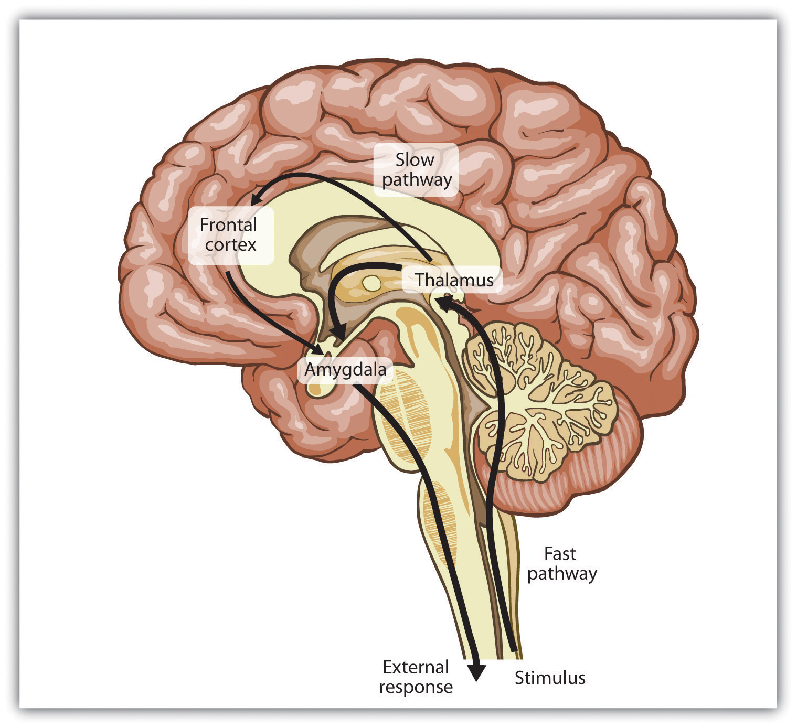
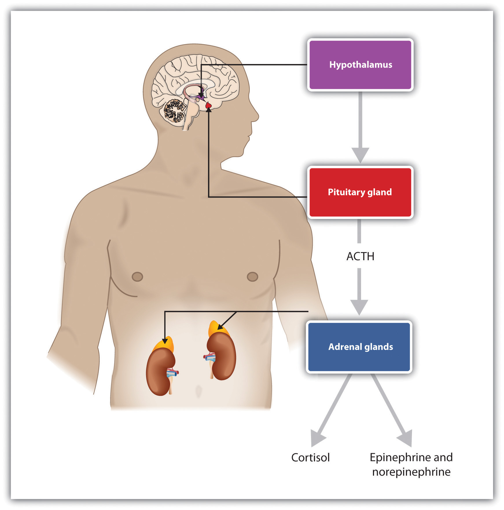
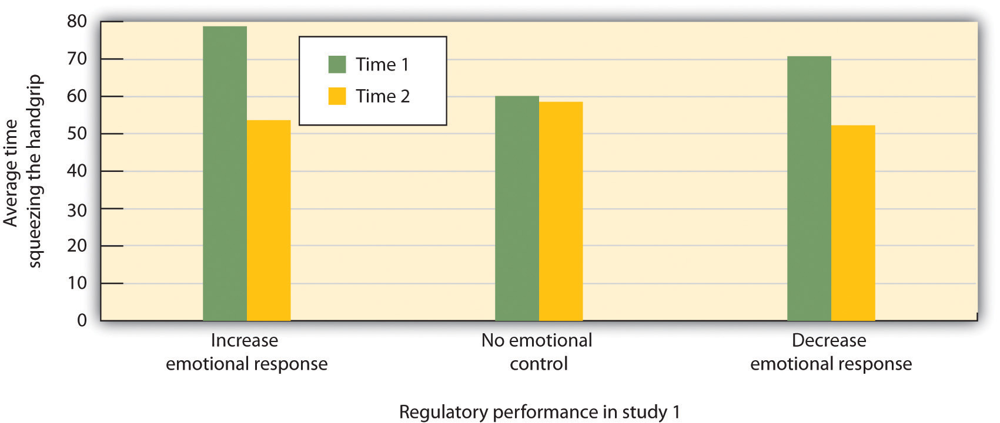
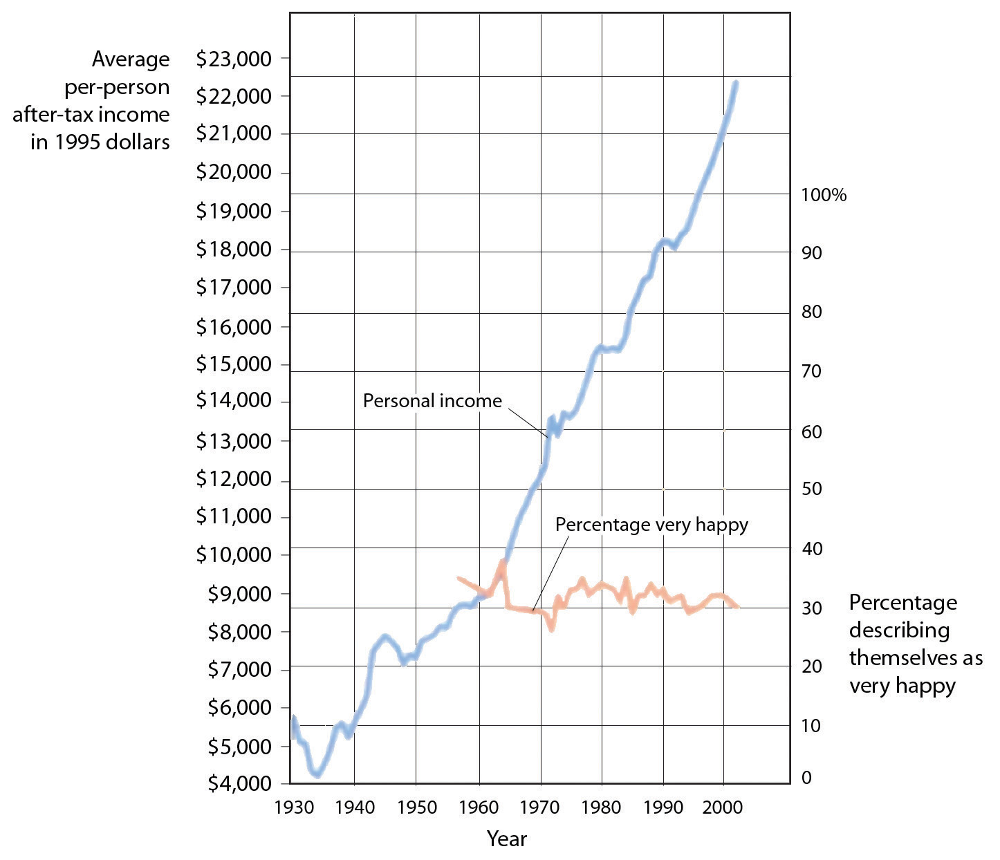
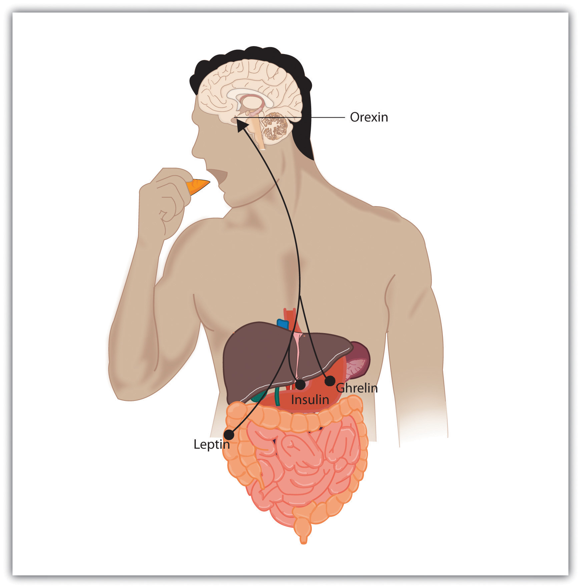
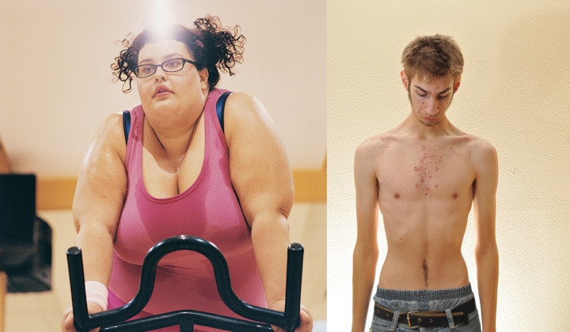

He was 3,000 feet up in the air when the sudden loss of power in his airplane put his life, as well as the lives of 150 other passengers and crew members, in his hands. Both of the engines on flight 1539 had shut down, and his options for a safe landing were limited.
Sully kept flying the plane and alerted the control tower to the situation:
This is Cactus 1539…hit birds. We lost thrust in both engines. We’re turning back towards La Guardia.
When the tower gave him the compass setting and runway for a possible landing, Sullenberger’s extensive experience allowed him to give a calm response:
I’m not sure if we can make any runway…Anything in New Jersey?
Captain Sullenberger was not just any pilot in a crisis, but a former U.S. Air Force fighter pilot with 40 years of flight experience. He had served as a flight instructor and the Airline Pilots Association safety chairman. Training had quickened his mental processes in assessing the threat, allowing him to maintain what tower operators later called an “eerie calm.” He knew the capabilities of his plane.
When the tower suggested a runway in New Jersey, Sullenberger calmly replied:
We’re unable. We may end up in the Hudson.
Figure 10.1 Captain Sullenberger and His Plane on the Hudson

Imagine that you are on a plane that you know is going to crash. What emotions would you experience, and how would you respond to them? Would the rush of fear cause you to panic, or could you control your emotions like Captain Sullenberger did, as he calmly calculated the heading, position, thrust, and elevation of the plane, and then landed it on the Hudson River?
Sources: Sullenberger photo courtesy of Ingrid Taylar, http://www.flickr.com/photos/taylar/4350610886. Plane photo courtesy of Greg L., http://commons.wikimedia.org/wiki/File:Plane_crash_into_Hudson_Rivercroped.jpg.
The last communication from Captain Sullenberger to the tower advised of the eventual outcome:
We’re going to be in the Hudson.
He calmly set the plane down on the water. Passengers reported that the landing was like landing on a rough runway. The crew kept the passengers calm as women, children, and then the rest of the passengers were evacuated onto the boats of the rescue personnel that had quickly arrived. Captain Sullenberger then calmly walked the aisle of the plane to be sure that everyone was out before joining the 150 other rescued survivors (Levin, 2009; National Transportation Safety Board, 2009).Levin, A. (2009, June 9). Experience averts tragedy in Hudson landing. USA Today. Retrieved from http://www.usatoday.com/news/nation/2009-06-08-hudson_N.htm; National Transportation Safety Board. (2009, June 9). Excerpts of Flight 1549 cockpit communications. USA Today. Retrieved from http://www.usatoday.com/news/nation/2009-06-09-hudson-cockpit-transcript_N.htm
Some called it “grace under pressure,” and others the “miracle on the Hudson.” But psychologists see it as the ultimate in emotion regulation—the ability to control and productively use one’s emotions.
The topic of this chapter is affectThe experience of feeling or emotion., defined as the experience of feeling or emotion. Affect is an essential part of the study of psychology because it plays such an important role in everyday life. As we will see, affect guides behavior, helps us make decisions, and has a major impact on our mental and physical health.
The two fundamental components of affect are emotions and motivation. Both of these words have the same underlying Latin root, meaning “to move.” In contrast to cognitive processes that are calm, collected, and frequently rational, emotions and motivations involve arousalOur experiences of the bodily responses created by the sympathetic division of the autonomic nervous system., or our experiences of the bodily responses created by the sympathetic division of the autonomic nervous system (ANS). Because they involve arousal, emotions and motivations are “hot”—they “charge,” “drive,” or “move” our behavior.
When we experience emotions or strong motivations, we feel the experiences. When we become aroused, the sympathetic nervous system provides us with energy to respond to our environment. The liver puts extra sugar into the bloodstream, the heart pumps more blood, our pupils dilate to help us see better, respiration increases, and we begin to perspire to cool the body. The stress hormones epinephrine and norepinephrine are released. We experience these responses as arousal.
An emotionA mental and physiological feeling state that directs our attention and guides our behavior. is a mental and physiological feeling state that directs our attention and guides our behavior. Whether it is the thrill of a roller-coaster ride that elicits an unexpected scream, the flush of embarrassment that follows a public mistake, or the horror of a potential plane crash that creates an exceptionally brilliant response in a pilot, emotions move our actions. Emotions normally serve an adaptive role: We care for infants because of the love we feel for them, we avoid making a left turn onto a crowded highway because we fear that a speeding truck may hit us, and we are particularly nice to Mandy because we are feeling guilty that we didn’t go to her party. But emotions may also be destructive, such as when a frustrating experience leads us to lash out at others who do not deserve it.
Motivations are closely related to emotions. A motivationA driving force that initiates and directs behavior. is a driving force that initiates and directs behavior. Some motivations are biological, such as the motivation for food, water, and sex. But there are a variety of other personal and social motivations that can influence behavior, including the motivations for social approval and acceptance, the motivation to achieve, and the motivation to take, or to avoid taking, risks (Morsella, Bargh, & Gollwitzer, 2009).Morsella, E., Bargh, J. A., & Gollwitzer, P. M. (2009). Oxford handbook of human action. New York, NY: Oxford University Press. In each case we follow our motivations because they are rewarding. As predicted by basic theories of operant learning, motivations lead us to engage in particular behaviors because doing so makes us feel good.
Motivations are often considered in psychology in terms of drives, which are internal states that are activated when the physiological characteristics of the body are out of balance, and goals, which are desired end states that we strive to attain. Motivation can thus be conceptualized as a series of behavioral responses that lead us to attempt to reduce drives and to attain goals by comparing our current state with a desired end state (Lawrence, Carver, & Scheier, 2002).Lawrence, J. W., Carver, C. S., & Scheier, M. F. (2002). Velocity toward goal attainment in immediate experience as a determinant of affect. Journal of Applied Social Psychology, 32(4), 788–802. Like a thermostat on an air conditioner, the body tries to maintain homeostasis, the natural state of the body’s systems, with goals, drives, and arousal in balance. When a drive or goal is aroused—for instance, when we are hungry—the thermostat turns on and we start to behave in a way that attempts to reduce the drive or meet the goal (in this case to seek food). As the body works toward the desired end state, the thermostat continues to check whether or not the end state has been reached. Eventually, the need or goal is satisfied (we eat), and the relevant behaviors are turned off. The body’s thermostat continues to check for homeostasis and is always ready to react to future needs.
In addition to more basic motivations such as hunger, a variety of other personal and social motivations can also be conceptualized in terms of drives or goals. When the goal of studying for an exam is hindered because we take a day off from our schoolwork, we may work harder on our studying on the next day to move us toward our goal. When we are dieting, we may be more likely to have a big binge on a day when the scale says that we have met our prior day’s goals. And when we are lonely, the motivation to be around other people is aroused and we try to socialize. In many, if not most cases, our emotions and motivations operate out of our conscious awareness to guide our behavior (Freud, 1922; Hassin, Bargh, & Zimerman, 2009; Williams, Bargh, Nocera, & Gray, 2009).Freud, S. (1922). The unconscious. The Journal of Nervous and Mental Disease, 56(3), 291; Hassin, R. R., Bargh, J. A., & Zimerman, S. (2009). Automatic and flexible: The case of nonconscious goal pursuit. Social Cognition, 27(1), 20–36; Williams, L. E., Bargh, J. A., Nocera, C. C., & Gray, J. R. (2009). The unconscious regulation of emotion: Nonconscious reappraisal goals modulate emotional reactivity. Emotion, 9(6), 847–854.
We begin this chapter by considering the role of affect on behavior, discussing the most important psychological theories of emotions. Then we will consider how emotions influence our mental and physical health. We will discuss how the experience of long-term stress causes illness, and then turn to research on positive thinking and what has been learned about the beneficial health effects of more positive emotions. Finally, we will review some of the most important human motivations, including the behaviors of eating and sex. The importance of this chapter is not only in helping you gain an understanding the principles of affect but also in helping you discover the important roles that affect plays in our everyday lives, and particularly in our mental and physical health. The study of the interface between affect and physical health—that principle that “everything that is physiological is also psychological”—is a key focus of the branch of psychology known as health psychology. The importance of this topic has made health psychology one of the fastest growing fields in psychology.
The most fundamental emotions, known as the basic emotionsThe emotions of anger, disgust, fear, happiness, sadness, and surprise., are those of anger, disgust, fear, happiness, sadness, and surprise. The basic emotions have a long history in human evolution, and they have developed in large part to help us make rapid judgments about stimuli and to quickly guide appropriate behavior (LeDoux, 2000).LeDoux, J. E. (2000). Emotion circuits in the brain. Annual Review of Neuroscience, 23, 155–184. The basic emotions are determined in large part by one of the oldest parts of our brain, the limbic system, including the amygdala, the hypothalamus, and the thalamus. Because they are primarily evolutionarily determined, the basic emotions are experienced and displayed in much the same way across cultures (Ekman, 1992; Elfenbein & Ambady, 2002, 2003; Fridland, Ekman, & Oster, 1987),Ekman, P. (1992). Are there basic emotions? Psychological Review, 99(3), 550–553; Elfenbein, H. A., & Ambady, N. (2002). On the universality and cultural specificity of emotion recognition: A meta-analysis. Psychological Bulletin, 128, 203–23; Fridlund, A. J., Ekman, P., & Oster, H. (1987). Facial expressions of emotion. In A. Siegman & S. Feldstein (Eds.), Nonverbal behavior and communication (2nd ed., pp. 143–223). Hillsdale, NJ: Lawrence Erlbaum Associates. and people are quite accurate at judging the facial expressions of people from different cultures. View Note 10.8 "Video Clip: The Basic Emotions" to see a demonstration of the basic emotions.
Not all of our emotions come from the old parts of our brain; we also interpret our experiences to create a more complex array of emotional experiences. For instance, the amygdala may sense fear when it senses that the body is falling, but that fear may be interpreted completely differently (perhaps even as “excitement”) when we are falling on a roller-coaster ride than when we are falling from the sky in an airplane that has lost power. The cognitive interpretations that accompany emotions—known as cognitive appraisalThe cognitive interpretations that accompany emotions.—allow us to experience a much larger and more complex set of secondary emotions, as shown in Figure 10.2 "The Secondary Emotions". Although they are in large part cognitive, our experiences of the secondary emotions are determined in part by arousal (on the vertical axis of Figure 10.2 "The Secondary Emotions") and in part by their valence—that is, whether they are pleasant or unpleasant feelings (on the horizontal axis of Figure 10.2 "The Secondary Emotions")
Figure 10.2 The Secondary Emotions

The secondary emotions are those that have a major cognitive component. They are determined by both their level of arousal (low to high) and their valence (pleasant to unpleasant).
Source: Adapted from Russell, J. A. (1980). A circumplex model of affect. Journal of Personality and Social Psychology, 39, 1161–1178.
When you succeed in reaching an important goal, you might spend some time enjoying your secondary emotions, perhaps the experience of joy, satisfaction, and contentment. But when your close friend wins a prize that you thought you had deserved, you might also experience a variety of secondary emotions (in this case, the negative ones)—for instance, feeling angry, sad, resentful, and ashamed. You might mull over the event for weeks or even months, experiencing these negative emotions each time you think about it (Martin & Tesser, 2006).Martin, L. L., & Tesser, A. (2006). Extending the goal progress theory of rumination: Goal reevaluation and growth. In L. J. Sanna & E. C. Chang (Eds.), Judgments over time: The interplay of thoughts, feelings, and behaviors (pp. 145–162). New York, NY: Oxford University Press.
The distinction between the primary and the secondary emotions is paralleled by two brain pathways: a fast pathway and a slow pathway (Damasio, 2000; LeDoux, 2000; Ochsner, Bunge, Gross, & Gabrielli, 2002).Damasio, A. (2000). The feeling of what happens: Body and emotion in the making of consciousness. New York, NY: Mariner Books; LeDoux, J. E. (2000). Emotion circuits in the brain. Annual Review of Neuroscience, 23, 155–184; Ochsner, K. N., Bunge, S. A., Gross, J. J., & Gabrieli, J. D. E. (2002). Rethinking feelings: An fMRI study of the cognitive regulation of emotion. Journal of Cognitive Neuroscience, 14(8), 1215–1229. The thalamus acts as the major gatekeeper in this process (Figure 10.3 "Slow and Fast Emotional Pathways"). Our response to the basic emotion of fear, for instance, is primarily determined by the fast pathway through the limbic system. When a car pulls out in front of us on the highway, the thalamus activates and sends an immediate message to the amygdala. We quickly move our foot to the brake pedal. Secondary emotions are more determined by the slow pathway through the frontal lobes in the cortex. When we stew in jealousy over the loss of a partner to a rival or recollect on our win in the big tennis match, the process is more complex. Information moves from the thalamus to the frontal lobes for cognitive analysis and integration, and then from there to the amygdala. We experience the arousal of emotion, but it is accompanied by a more complex cognitive appraisal, producing more refined emotions and behavioral responses.
Figure 10.3 Slow and Fast Emotional Pathways
There are two emotional pathways in the brain (one slow and one fast), both of which are controlled by the thalamus.
Although emotions might seem to you to be more frivolous or less important in comparison to our more rational cognitive processes, both emotions and cognitions can help us make effective decisions. In some cases we take action after rationally processing the costs and benefits of different choices, but in other cases we rely on our emotions. Emotions become particularly important in guiding decisions when the alternatives between many complex and conflicting alternatives present us with a high degree of uncertainty and ambiguity, making a complete cognitive analysis difficult. In these cases we often rely on our emotions to make decisions, and these decisions may in many cases be more accurate than those produced by cognitive processing (Damasio, 1994; Dijksterhuis, Bos, Nordgren, & van Baaren, 2006; Nordgren & Dijksterhuis, 2009; Wilson & Schooler, 1991).Damasio, A. R. (1994). Descartes’ error: Emotion, reason, and the human brain. New York, NY: Grosset/Putnam; Dijksterhuis, A., Bos, M. W., Nordgren, L. F., & van Baaren, R. B. (2006). On making the right choice: The deliberation-without-attention effect. Science, 311(5763), 1005–1007; Nordgren, L. F., & Dijksterhuis, A. P. (2009). The devil is in the deliberation: Thinking too much reduces preference consistency. Journal of Consumer Research, 36(1), 39–46; Wilson, T. D., & Schooler, J. W. (1991). Thinking too much: Introspection can reduce the quality of preferences and decisions. Journal of Personality and Social Psychology, 60(2), 181–192.
Recall for a moment a situation in which you have experienced an intense emotional response. Perhaps you woke up in the middle of the night in a panic because you heard a noise that made you think that someone had broken into your house or apartment. Or maybe you were calmly cruising down a street in your neighborhood when another car suddenly pulled out in front of you, forcing you to slam on your brakes to avoid an accident. I’m sure that you remember that your emotional reaction was in large part physical. Perhaps you remember being flushed, your heart pounding, feeling sick to your stomach, or having trouble breathing. You were experiencing the physiological part of emotion—arousal—and I’m sure you have had similar feelings in other situations, perhaps when you were in love, angry, embarrassed, frustrated, or very sad.
If you think back to a strong emotional experience, you might wonder about the order of the events that occurred. Certainly you experienced arousal, but did the arousal come before, after, or along with the experience of the emotion? Psychologists have proposed three different theories of emotion, which differ in terms of the hypothesized role of arousal in emotion (Figure 10.4 "Three Theories of Emotion").
Figure 10.4 Three Theories of Emotion

The Cannon-Bard theory proposes that emotions and arousal occur at the same time. The James-Lange theory proposes the emotion is the result of arousal. Schachter and Singer’s two-factor model proposes that arousal and cognition combine to create emotion.
If your experiences are like mine, as you reflected on the arousal that you have experienced in strong emotional situations, you probably thought something like, “I was afraid and my heart started beating like crazy.” At least some psychologists agree with this interpretation. According to the theory of emotion proposed by Walter Cannon and Philip Bard, the experience of the emotion (in this case, “I’m afraid”) occurs alongside our experience of the arousal (“my heart is beating fast”). According to the Cannon-Bard theory of emotionThe idea that the experience of emotion is accompanied by physiological arousal., the experience of an emotion is accompanied by physiological arousal. Thus, according to this model of emotion, as we become aware of danger, our heart rate also increases.
Although the idea that the experience of an emotion occurs alongside the accompanying arousal seems intuitive to our everyday experiences, the psychologists William James and Carl Lange had another idea about the role of arousal. According to the James-Lange theory of emotionThe idea that the experience of emotion is the result of the arousal that we experience., our experience of an emotion is the result of the arousal that we experience. This approach proposes that the arousal and the emotion are not independent, but rather that the emotion depends on the arousal. The fear does not occur along with the racing heart but occurs because of the racing heart. As William James put it, “We feel sorry because we cry, angry because we strike, afraid because we tremble” (James, 1884, p. 190).James, W. (1884). What is an emotion? Mind, 9(34), 188–205. A fundamental aspect of the James-Lange theory is that different patterns of arousal may create different emotional experiences.
There is research evidence to support each of these theories. The operation of the fast emotional pathway (Figure 10.3 "Slow and Fast Emotional Pathways") supports the idea that arousal and emotions occur together. The emotional circuits in the limbic system are activated when an emotional stimulus is experienced, and these circuits quickly create corresponding physical reactions (LeDoux, 2000).LeDoux, J. E. (2000). Emotion circuits in the brain. Annual Review of Neuroscience, 23, 155–184. The process happens so quickly that it may feel to us as if emotion is simultaneous with our physical arousal.
On the other hand, and as predicted by the James-Lange theory, our experiences of emotion are weaker without arousal. Patients who have spinal injuries that reduce their experience of arousal also report decreases in emotional responses (Hohmann, 1966).Hohmann, G. W. (1966). Some effects of spinal cord lesions on experienced emotional feelings. Psychophysiology, 3(2), 143–156. There is also at least some support for the idea that different emotions are produced by different patterns of arousal. People who view fearful faces show more amygdala activation than those who watch angry or joyful faces (Whalen et al., 2001; Witvliet & Vrana, 1995),Whalen, P. J., Shin, L. M., McInerney, S. C., Fischer, H., Wright, C. I., & Rauch, S. L. (2001). A functional MRI study of human amygdala responses to facial expressions of fear versus anger. Emotion, 1(1), 70–83; Witvliet, C. V., & Vrana, S. R. (1995). Psychophysiological responses as indices of affective dimensions. Psychophysiology, 32(5), 436–443. we experience a red face and flushing when we are embarrassed but not when we experience other emotions (Leary, Britt, Cutlip, & Templeton, 1992),Leary, M. R., Britt, T. W., Cutlip, W. D., & Templeton, J. L. (1992). Social blushing. Psychological Bulletin, 112(3), 446–460. and different hormones are released when we experience compassion than when we experience other emotions (Oatley, Keltner, & Jenkins, 2006).Oatley, K., Keltner, D., & Jenkins, J. M. (2006). Understanding emotions (2nd ed.). Malden, MA: Blackwell.
Whereas the James-Lange theory proposes that each emotion has a different pattern of arousal, the two-factor theory of emotion takes the opposite approach, arguing that the arousal that we experience is basically the same in every emotion, and that all emotions (including the basic emotions) are differentiated only by our cognitive appraisal of the source of the arousal. The two-factor theory of emotionThe idea that the strength of emotion is determined by the intensity of the arousal we are experiencing, but that the cognitive appraisal of the situation determines what the emotion will be. asserts that the experience of emotion is determined by the intensity of the arousal we are experiencing, but that the cognitive appraisal of the situation determines what the emotion will be. Because both arousal and appraisal are necessary, we can say that emotions have two factors: an arousal factor and a cognitive factor (Schachter & Singer, 1962):Schachter, S., & Singer, J. (1962). Cognitive, social, and physiological determinants of emotional state. Psychological Review, 69, 379–399.
emotion = arousal + cognitionIn some cases it may be difficult for a person who is experiencing a high level of arousal to accurately determine which emotion she is experiencing. That is, she may be certain that she is feeling arousal, but the meaning of the arousal (the cognitive factor) may be less clear. Some romantic relationships, for instance, have a very high level of arousal, and the partners alternatively experience extreme highs and lows in the relationship. One day they are madly in love with each other and the next they are in a huge fight. In situations that are accompanied by high arousal, people may be unsure what emotion they are experiencing. In the high arousal relationship, for instance, the partners may be uncertain whether the emotion they are feeling is love, hate, or both at the same time (sound familiar?). The tendency for people to incorrectly label the source of the arousal that they are experiencing is known as the misattribution of arousalWhen we incorrectly label the source of the arousal that we are experiencing..
Figure 10.5 Capilano River Bridge

Arousal caused by the height of this bridge was misattributed as attraction by the men who were interviewed by an attractive woman as they crossed it.
Source: Photo courtesy of Goobiebilly, http://commons.wikimedia.org/wiki/File:Capilano_suspension_bridge_-g.jpg.
In one interesting field study by Dutton and Aron (1974),Dutton, D., & Aron, A. (1974). Some evidence for heightened sexual attraction under conditions of high anxiety. Journal of Personality and Social Psychology, 30, 510–517. an attractive young woman approached individual young men as they crossed a wobbly, long suspension walkway hanging more than 200 feet above a river in British Columbia, Canada. The woman asked each man to help her fill out a class questionnaire. When he had finished, she wrote her name and phone number on a piece of paper, and invited him to call if he wanted to hear more about the project. More than half of the men who had been interviewed on the bridge later called the woman. In contrast, men approached by the same woman on a low solid bridge, or who were interviewed on the suspension bridge by men, called significantly less frequently. The idea of misattribution of arousal can explain this result—the men were feeling arousal from the height of the bridge, but they misattributed it as romantic or sexual attraction to the woman, making them more likely to call her.
If you think a bit about your own experiences of different emotions, and if you consider the equation that suggests that emotions are represented by both arousal and cognition, you might start to wonder how much was determined by each. That is, do we know what emotion we are experiencing by monitoring our feelings (arousal) or by monitoring our thoughts (cognition)? The bridge study you just read about might begin to provide you an answer: The men seemed to be more influenced by their perceptions of how they should be feeling (their cognition) rather than by how they actually were feeling (their arousal).
Stanley Schachter and Jerome Singer (1962)Schachter, S., & Singer, J. E. (1962). Cognitive, social and physiological determinants of emotional state. Psychological Review, 69, 379–399. directly tested this prediction of the two-factor theory of emotion in a well-known experiment. Schachter and Singer believed that the cognitive part of the emotion was critical—in fact, they believed that the arousal that we are experiencing could be interpreted as any emotion, provided we had the right label for it. Thus they hypothesized that if an individual is experiencing arousal for which he has no immediate explanation, he will “label” this state in terms of the cognitions that are created in his environment. On the other hand, they argued that people who already have a clear label for their arousal would have no need to search for a relevant label, and therefore should not experience an emotion.
In the research, male participants were told that they would be participating in a study on the effects of a new drug, called “suproxin,” on vision. On the basis of this cover story, the men were injected with a shot of the neurotransmitter epinephrine, a drug that normally creates feelings of tremors, flushing, and accelerated breathing in people. The idea was to give all the participants the experience of arousal.
Then, according to random assignment to conditions, the men were told that the drug would make them feel certain ways. The men in the epinephrine informed condition were told the truth about the effects of the drug—they were told that they would likely experience tremors, their hands would start to shake, their hearts would start to pound, and their faces might get warm and flushed. The participants in the epinephrine-uninformed condition, however, were told something untrue—that their feet would feel numb, that they would have an itching sensation over parts of their body, and that they might get a slight headache. The idea was to make some of the men think that the arousal they were experiencing was caused by the drug (the informed condition), whereas others would be unsure where the arousal came from (the uninformed condition).
Then the men were left alone with a confederate who they thought had received the same injection. While they were waiting for the experiment (which was supposedly about vision) to begin, the confederate behaved in a wild and crazy (Schachter and Singer called it “euphoric”) manner. He wadded up spitballs, flew paper airplanes, and played with a hula-hoop. He kept trying to get the participant to join in with his games. Then right before the vision experiment was to begin, the participants were asked to indicate their current emotional states on a number of scales. One of the emotions they were asked about was euphoria.
If you are following the story, you will realize what was expected: The men who had a label for their arousal (the informed group) would not be experiencing much emotion because they already had a label available for their arousal. The men in the misinformed group, on the other hand, were expected to be unsure about the source of the arousal. They needed to find an explanation for their arousal, and the confederate provided one. As you can see in Figure 10.6 "Results From Schachter and Singer, 1962" (left side), this is just what they found. The participants in the misinformed condition were more likely to be experiencing euphoria (as measured by their behavioral responses with the confederate) than were those in the informed condition.
Then Schachter and Singer conducted another part of the study, using new participants. Everything was exactly the same except for the behavior of the confederate. Rather than being euphoric, he acted angry. He complained about having to complete the questionnaire he had been asked to do, indicating that the questions were stupid and too personal. He ended up tearing up the questionnaire that he was working on, yelling “I don’t have to tell them that!” Then he grabbed his books and stormed out of the room.
What do you think happened in this condition? The answer is the same thing: The misinformed participants experienced more anger (again as measured by the participant’s behaviors during the waiting period) than did the informed participants. (Figure 10.6 "Results From Schachter and Singer, 1962", right side) The idea is that because cognitions are such strong determinants of emotional states, the same state of physiological arousal could be labeled in many different ways, depending entirely on the label provided by the social situation. As Schachter and Singer put it: “Given a state of physiological arousal for which an individual has no immediate explanation, he will ‘label’ this state and describe his feelings in terms of the cognitions available to him” (Schachter & Singer, 1962, p. 381).Schachter, S., & Singer, J. E. (1962). Cognitive, social and physiological determinants of emotional state. Psychological Review, 69, 379–399.
Figure 10.6 Results From Schachter and Singer, 1962

Results of the study by Schachter and Singer (1962) support the two-factor theory of emotion. The participants who did not have a clear label for their arousal took on the emotion of the confederate.
Source: Adapted from Schachter, S., & Singer, J. E. (1962). Cognitive, social and physiological determinants of emotional state. Psychological Review, 69, 379–399.
Because it assumes that arousal is constant across emotions, the two-factor theory also predicts that emotions may transfer or “spill over” from one highly arousing event to another. My university basketball team recently won the NCAA basketball championship, but after the final victory some students rioted in the streets near the campus, lighting fires and burning cars. This seems to be a very strange reaction to such a positive outcome for the university and the students, but it can be explained through the spillover of the arousal caused by happiness to destructive behaviors. The principle of excitation transfer refers to the phenomenon that occurs when people who are already experiencing arousal from one event tend to also experience unrelated emotions more strongly.
In sum, each of the three theories of emotion has something to support it. In terms of Cannon-Bard, emotions and arousal generally are subjectively experienced together, and the spread is very fast. In support of the James-Lange theory, there is at least some evidence that arousal is necessary for the experience of emotion, and that the patterns of arousal are different for different emotions. And in line with the two-factor model, there is also evidence that we may interpret the same patterns of arousal differently in different situations.
In addition to experiencing emotions internally, we also express our emotions to others, and we learn about the emotions of others by observing them. This communication process has evolved over time, and is highly adaptive. One way that we perceive the emotions of others is through their nonverbal communicationCommunication, primarily of liking or disliking, that does not involve words., that is, communication that does not involve words (Ambady & Weisbuch, 2010; Anderson, 2007).Ambady, N., & Weisbuch, M. (2010). Nonverbal behavior. In S. T. Fiske, D. T. Gilbert, & G. Lindzey (Eds.), Handbook of social psychology (5th ed., Vol. 1, pp. 464–497). Hoboken, NJ: John Wiley & Sons; Andersen, P. (2007). Nonverbal communication: Forms and functions (2nd ed.). Long Grove, IL: Waveland Press. Nonverbal communication includes our tone of voice, gait, posture, touch, and facial expressions, and we can often accurately detect the emotions that other people are experiencing through these channels. Table 10.1 "Some Common Nonverbal Communicators" shows some of the important nonverbal behaviors that we use to express emotion and some other information (particularly liking or disliking, and dominance or submission).
Table 10.1 Some Common Nonverbal Communicators
| Nonverbal cue | Description | Examples |
|---|---|---|
| Proxemics | Rules about the appropriate use of personal space | Standing nearer to someone can expressing liking or dominance. |
| Body appearance | Expressions based on alterations to our body | Body building, breast augmentation, weight loss, piercings, and tattoos are often used to appear more attractive to others. |
| Body positioning and movement | Expressions based on how our body appears | A more “open” body position can denote liking; a faster walking speed can communicate dominance. |
| Gestures | Behaviors and signs made with our hands or faces | The peace sign communicates liking; the “finger” communicates disrespect. |
| Facial expressions | The variety of emotions that we express, or attempt to hide, through our face | Smiling or frowning and staring or avoiding looking at the other can express liking or disliking, as well as dominance or submission. |
| Paralanguage | Clues to identity or emotions contained in our voices | Pronunciation, accents, and dialect can be used to communicate identity and liking. |
Just as there is no “universal” spoken language, there is no universal nonverbal language. For instance, in the United States and many Western cultures we express disrespect by showing the middle finger (the “finger” or the “bird”). But in Britain, Ireland, Australia and New Zealand, the “V” sign (made with back of the hand facing the recipient) serves a similar purpose. In countries where Spanish, Portuguese, or French are spoken, a gesture in which a fist is raised and the arm is slapped on the bicep is equivalent to the finger, and in Russia, Indonesia, Turkey, and China a sign in which the hand and fingers are curled and the thumb is thrust between the middle and index fingers is used for the same purpose.
The most important communicator of emotion is the face. The face contains 43 different muscles that allow it to make more than 10,000 unique configurations and to express a wide variety of emotions. For example, happiness is expressed by smiles, which are created by two of the major muscles surrounding the mouth and the eyes, and anger is created by lowered brows and firmly pressed lips.
In addition to helping us express our emotions, the face also helps us feel emotion. The facial feedback hypothesisThe idea that the movement of our facial muscles can trigger corresponding emotions. proposes that the movement of our facial muscles can trigger corresponding emotions. Fritz Strack and his colleagues (1988)Strack, F., Martin, L., & Stepper, S. (1988). Inhibiting and facilitating conditions of the human smile: A nonobtrusive test of the facial feedback hypothesis. Journal of Personality and Social Psychology, 54(5), 768–777. doi:10.1037/0022-3514.54.5.768 asked their research participants to hold a pen in their teeth (mimicking the facial action of a smile) or between their lips (similar to a frown), and then had them rate the funniness of a cartoon. They found that the cartoons were rated as more amusing when the pen was held in the “smiling” position—the subjective experience of emotion was intensified by the action of the facial muscles.
These results, and others like them, show that our behaviors, including our facial expressions, are influenced by, but also influence our affect. We may smile because we are happy, but we are also happy because we are smiling. And we may stand up straight because we are proud, but we are proud because we are standing up straight (Stepper & Strack, 1993).Stepper, S., & Strack, F. (1993). Proprioceptive determinants of emotional and nonemotional feelings. Journal of Personality and Social Psychology, 64(2), 211–220.
Emotions matter because they influence our behavior. And there is no emotional experience that has a more powerful influence on us than stress. StressPhysiological responses that occur when an organism fails to respond appropriately to emotional or physical threats. refers to the physiological responses that occur when an organism fails to respond appropriately to emotional or physical threats (Selye, 1956).Selye, H. (1956). The stress of life. New York, NY: McGraw-Hill. Extreme negative events, such as being the victim of a terrorist attack, a natural disaster, or a violent crime, may produce an extreme form of stress known as posttraumatic stress disorder (PTSD)A medical syndrome that includes symptoms of anxiety, sleeplessness, nightmares, and social withdrawal., a medical syndrome that includes symptoms of anxiety, sleeplessness, nightmares, and social withdrawal. PTSD is frequently experienced by soldiers who return home from wars, with those who have experienced more extreme events during the war also experiencing more PTSD.
When it is extreme or prolonged, stress can create substantial health problems. Survivors of hurricane Katrina had three times the rate of heart attacks than the national average in the years following the disaster, and this is probably due to the stress that the hurricane created (American Medical Association, 2009).American Medical Association. (2009). Three-fold heart attack increase in Hurricane Katrina survivors. Retrieved from http://www.ama-assn.org/ama/pub/news/news/heart-attack-katrina-survivors.shtml And people in New York City who lived nearer to the site of the 9/11 terrorist attacks reported experiencing more stress in the year following it than those who lived farther away (Pulcino et al., 2003).Pulcino, T., Galea, S., Ahern, J., Resnick, H., Foley, M., & Vlahov, D. (2003). Posttraumatic stress in women after the September 11 terrorist attacks in New York City. Journal of Women’s Health, 12(8), 809–820. But stress is not unique to the experience of extremely traumatic events. It can also occur, and have a variety of negative outcomes, in our everyday lives.
The physiologist Hans Seyle (1907–1982) studied stress by examining how rats responded to being exposed to stressors such as extreme cold, infection, shock, or excessive exercise (Seyle, 1936, 1974, 1982).Seyle, Hans (1936). A syndrome produced by diverse nocuous agents. Nature, 138, 32. Retrieved from http://neuro.psychiatryonline.org/cgi/reprint/10/2/230a.pdf; Seyle, H. (1974). Forty years of stress research: Principal remaining problems and misconceptions. Canadian Medical Association Journal, 115(1), 53–56; Seyle, H. (1982). The nature of stress. Retrieved from http://www.icnr.com/articles/thenatureofstress.html Seyle found that regardless of the source of the stress, the rats experienced the same series of physiological changes as they suffered the prolonged stress. Seyle created the term general adaptation syndromeThe distinct phases of physiological change that occur in response to long-term stress: alarm, resistance, and exhaustion. to refer to the three distinct phases of physiological change that occur in response to long-term stress: alarm, resistance, and exhaustion (Figure 10.8 "General Adaptation Syndrome").
Figure 10.8 General Adaptation Syndrome

Hans Seyle’s research on the general adaptation syndrome documented the stages of prolonged exposure to stress.
The experience of stress creates both an increase in general arousal in the sympathetic division of the autonomic nervous system (ANS), as well as another, even more complex, system of physiological changes through the HPA axis ((Reference None not found in Book)). The HPA axisA physiological response to stress involving interactions among the hypothalamus, the pituitary, and the adrenal glands. is a physiological response to stress involving interactions among the hypothalamus, the pituitary, and the adrenal glands. The HPA response begins when the hypothalamus secretes releasing hormones that direct the pituitary gland to release the hormone ACTH. ACTH then directs the adrenal glands to secrete more hormones, including epinephrine, norepinephrine, and cortisolA stress hormone that releases sugars into the blood, helping preparing the body to respond to threat., a stress hormone that releases sugars into the blood, helping preparing the body to respond to threat (Rodrigues, LeDoux, & Sapolsky, 2009).Rodrigues, S. M., LeDoux, J. E., & Sapolsky, R. M. (2009). The influence of stress hormones on fear circuitry. Annual Review of Neuroscience, 32, 289–313.
Figure 10.9 HPA Axis
Stress activates the HPA axis. The result is the secretion of epinephrine, norepinephrine, and cortisol.
The initial arousal that accompanies stress is normally quite adaptive because it helps us respond to potentially dangerous events. The experience of prolonged stress, however, has a direct negative influence on our physical health, because at the same time that stress increases activity in the sympathetic division of the ANS, it also suppresses activity in the parasympathetic division of the ANS. When stress is long-term, the HPA axis remains active and the adrenals continue to produce cortisol. This increased cortisol production exhausts the stress mechanism, leading to fatigue and depression.
The HPA reactions to persistent stress lead to a weakening of the immune system, making us more susceptible to a variety of health problems including colds and other diseases (Cohen & Herbert, 1996; Faulkner & Smith, 2009; Miller, Chen, & Cole, 2009; Uchino, Smith, Holt-Lunstad, Campo, & Reblin, 2007).Cohen, S., & Herbert, T. B. (1996). Health psychology: Psychological factors and physical disease from the perspective of human psychoneuroimmunology. Annual Review of Psychology, 47, 113–142; Faulkner, S., & Smith, A. (2009). A prospective diary study of the role of psychological stress and negative mood in the recurrence of herpes simplex virus (HSV1). Stress and Health: Journal of the International Society for the Investigation of Stress, 25(2), 179–187; Miller, G., Chen, E., & Cole, S. W. (2009). Health psychology: Developing biologically plausible models linking the social world and physical health. Annual Review of Psychology, 60, 501–524; Uchino, B. N., Smith, T. W., Holt-Lunstad, J., Campo, R., & Reblin, M. (2007). Stress and illness. In J. T. Cacioppo, L. G. Tassinary, & G. G. Berntson (Eds.), Handbook of psychophysiology (3rd ed., pp. 608–632). New York, NY: Cambridge University Press. Stress also damages our DNA, making us less likely to be able to repair wounds and respond to the genetic mutations that cause disease (Epel et al., 2006).Epel, E., Lin, J., Wilhelm, F., Wolkowitz, O., Cawthon, R., Adler, N.,…Blackburn, E. H. (2006). Cell aging in relation to stress arousal and cardiovascular disease risk factors. Psychoneuroendocrinology, 31(3), 277–287. As a result, wounds heal more slowly when we are under stress, and we are more likely to get cancer (Kiecolt-Glaser, McGuire, Robles, & Glaser, 2002; Wells, 2006).Kiecolt-Glaser, J. K., McGuire, L., Robles, T. F., & Glaser, R. (2002). Psychoneuroimmunology: Psychological influences on immune function and health. Journal of Consulting & Clinical Psychology, 70(3), 537–547; Wells, W. (2006). How chronic stress exacerbates cancer. Journal of Cell Biology, 174(4), 476.
Chronic stress is also a major contributor to heart disease. Although heart disease is caused in part by genetic factors, as well as high blood pressure, high cholesterol, and cigarette smoking, it is also caused by stress (Krantz & McCeney, 2002).Krantz, D. S., & McCeney, M. K. (2002). Effects of psychological and social factors on organic disease: A critical assessment of research on coronary heart disease. Annual Review of Psychology, 53, 341–369. Long-term stress creates two opposite effects on the coronary system. Stress increases cardiac output (i.e., the heart pumps more blood) at the same time that it reduces the ability of the blood vessels to conduct blood through the arteries, as the increase in levels of cortisol leads to a buildup of plaque on artery walls (Dekker et al., 2008).Dekker, M., Koper, J., van Aken, M., Pols, H., Hofman, A., de Jong, F.,…Tiemeier, H. (2008). Salivary cortisol is related to atherosclerosis of carotid arteries. Journal of Clinical Endocrinology & Metabolism, 93(10), 3741. The combination of increased blood flow and arterial constriction leads to increased blood pressure (hypertension), which can damage the heart muscle, leading to heart attack and death.
The stressors for Seyle’s rats included electric shock and exposure to cold. Although these are probably not on your top-10 list of most common stressors, the stress that you experience in your everyday life can also be taxing. Thomas Holmes and Richard Rahe (1967)Holmes, T. H., & Rahe, R. H. (1967). The social readjustment rating scale. Journal of Psychosomatic Research, 11, 213–218. developed a measure of some everyday life events that might lead to stress, and you can assess your own likely stress level by completing the measure in Table 10.2 "The Holmes and Rahe Stress Scale". You might want to pay particular attention to this score, because it can predict the likelihood that you will get sick. Rahe and colleagues (1970)Rahe, R. H., Mahan, J., Arthur, R. J., & Gunderson, E. K. E. (1970). The epidemiology of illness in naval environments: I. Illness types, distribution, severities and relationships to life change. Military Medicine, 135, 443–452. asked 2,500 members of the military to complete the rating scale and then assessed the health records of the soldiers over the following 6 months. The results were clear: The higher the scale score, the more likely the soldier was to end up in the hospital.
Table 10.2 The Holmes and Rahe Stress Scale
| Life event | Score |
|---|---|
| Death of spouse | 100 |
| Divorce | 73 |
| Marital separation from mate | 65 |
| Detention in jail, other institution | 63 |
| Death of a close family member | 63 |
| Major personal injury or illness | 53 |
| Marriage | 50 |
| Fired from work | 47 |
| Marital reconciliation | 45 |
| Retirement | 45 |
| Major change in the health or behavior of a family member | 44 |
| Pregnancy | 40 |
| Sexual difficulties | 39 |
| Gaining a new family member (e.g., through birth, adoption, oldster moving, etc.) | 39 |
| Major business readjustment (e.g., merger, reorganization, bankruptcy) | 39 |
| Major change in financial status | 38 |
| Death of close friend | 37 |
| Change to different line of work | 36 |
| Major change in the number of arguments with spouse | 35 |
| Taking out a mortgage or loan for a major purchase | 31 |
| Foreclosure on a mortgage or loan | 30 |
| Major change in responsibilities at work | 29 |
| Son or daughter leaving home (e.g., marriage, attending college) | 29 |
| Trouble with in-laws | 29 |
| Outstanding personal achievement | 28 |
| Spouse beginning or ceasing to work outside the home | 26 |
| Beginning or ceasing formal schooling | 26 |
| Major change in living conditions | 25 |
| Revision of personal habits (dress, manners, associations, etc.) | 24 |
| Trouble with boss | 23 |
| Major change in working hours or conditions | 20 |
| Change in residence | 20 |
| Change to a new school | 20 |
| Major change in usual type and/or amount of recreation | 19 |
| Major change in church activities (a lot more or less than usual) | 19 |
| Major change in social activities (clubs, dancing, movies, visiting) | 18 |
| Taking out a mortgage or loan for a lesser purchase (e.g., for a car, television , freezer, etc.) | 17 |
| Major change in sleeping habits | 16 |
| Major change in the number of family get-togethers | 15 |
| Major change in eating habits | 15 |
| Vacation | 13 |
| Christmas season | 12 |
| Minor violations of the law (e.g., traffic tickets, etc.) | 11 |
| Total | ______ |
You can calculate your score on this scale by adding the total points across each of the events that you have experienced over the past year. Then use Table 10.3 "Interpretation of Holmes and Rahe Stress Scale" to determine your likelihood of getting ill.
Table 10.3 Interpretation of Holmes and Rahe Stress Scale
| Number of life-change units | Chance of developing a stress-related illness (%) |
|---|---|
| Less than 150 | 30 |
| 150–299 | 50 |
| More than 300 | 80 |
Although some of the items on the Holmes and Rahe scale are more major, you can see that even minor stressors add to the total score. Our everyday interactions with the environment that are essentially negative, known as daily hasslesOur everyday negative interactions with the environment., can also create stress as well as poorer health outcomes (Hutchinson & Williams, 2007).Hutchinson, J. G., & Williams, P. G. (2007). Neuroticism, daily hassles, and depressive symptoms: An examination of moderating and mediating effects. Personality and Individual Differences, 42(7), 1367–1378. Events that may seem rather trivial altogether, such as misplacing our keys, having to reboot our computer because it has frozen, being late for an assignment, or getting cut off by another car in rush-hour traffic, can produce stress (Fiksenbaum, Greenglass, & Eaton, 2006).Fiksenbaum, L. M., Greenglass, E. R., & Eaton, J. (2006). Perceived social support, hassles, and coping among the elderly. Journal of Applied Gerontology, 25(1), 17–30. Glaser (1985)Glaser, R. (1985). Stress-related impairments in cellular immunity. Psychiatry Research, 16(3), 233–239. found that medical students who were tested during, rather than several weeks before, their school examination periods showed lower immune system functioning. Other research has found that even more minor stressors, such as having to do math problems during an experimental session, can compromise the immune system (Cacioppo et al., 1998).Cacioppo, J. T., Berntson, G. G., Malarkey, W. B., Kiecolt-Glaser, J. K., Sheridan, J. F., Poehlmann, K. M.,…Glaser, R. (1998). Autonomic, neuroendocrine, and immune responses to psychological stress: The reactivity hypothesis. In Annals of the New York Academy of Sciences: Neuroimmunomodulation: Molecular aspects, integrative systems, and clinical advances (Vol. 840, pp. 664–673). New York, NY: New York Academy of Sciences.
Not all people experience and respond to stress in the same way, and these differences can be important. The cardiologists Meyer Friedman and R. H. Rosenman (1974)Friedman, M., & Rosenman, R. H. (1974). Type A behavior and your heart. New York, NY: Knopf. were among the first to study the link between stress and heart disease. In their research they noticed that even though the partners in married couples often had similar lifestyles, diet, and exercise patterns, the husbands nevertheless generally had more heart disease than did the wives. As they tried to explain the difference, they focused on the personality characteristics of the partners, finding that the husbands were more likely than the wives to respond to stressors with negative emotions and hostility.
Recent research has shown that the strongest predictor of a physiological stress response from daily hassles is the amount of negative emotion that they evoke. People who experience strong negative emotions as a result of everyday hassles, and who respond to stress with hostility experience more negative health outcomes than do those who react in a less negative way (McIntyre, Korn, & Matsuo, 2008; Suls & Bunde, 2005).McIntyre, K., Korn, J., & Matsuo, H. (2008). Sweating the small stuff: How different types of hassles result in the experience of stress. Stress & Health: Journal of the International Society for the Investigation of Stress, 24(5), 383–392. doi:10.1002/smi.1190; Suls, J., & Bunde, J. (2005). Anger, anxiety, and depression as risk factors for cardiovascular disease: The problems and implications of overlapping affective dispositions. Psychological Bulletin, 131(2), 260–300. Williams and his colleagues (2001)Williams, R. B. (2001). Hostility: Effects on health and the potential for successful behavioral approaches to prevention and treatment. In A. Baum, T. A. Revenson, & J. E. Singer (Eds.), Handbook of health psychology. Mahwah, NJ: Lawrence Erlbaum Associates. found that people who scored high on measures of anger were three times more likely to suffer from heart attacks in comparison to those who scored lower on anger.
On average, men are more likely than are women to respond to stress by activating the fight-or-flight responseAn emotional and behavioral reaction to stress that increases the readiness for action., which is an emotional and behavioral reaction to stress that increases the readiness for action. The arousal that men experience when they are stressed leads them to either go on the attack, in an aggressive or revenging way, or else retreat as quickly as they can to safety from the stressor. The fight-or-flight response allows men to control the source of the stress if they think they can do so, or if that is not possible, it allows them to save face by leaving the situation. The fight-or-flight response is triggered in men by the activation of the HPA axis.
Women, on the other hand, are less likely to take a fight-or-flight response to stress. Rather, they are more likely to take a tend-and-befriend response (Taylor et al., 2000).Taylor, S. E., Klein, L. C., Lewis, B. P., Gruenewald, T. L., Gurung, R. A. R., & Updegraff, J. A. (2000). Biobehavioral responses to stress in females: Tend-and-befriend, not fight-or-flight. Psychological Review, 107(3), 411–429. The tend-and-befriend responseA behavioral reaction to stress that involves activities designed to create social networks that provide protection from threats. is a behavioral reaction to stress that involves activities designed to create social networks that provide protection from threats. This approach is also self-protective because it allows the individual to talk to others about her concerns, as well as to exchange resources, such as child care. The tend-and-befriend response is triggered in women by the release of the hormone ocytocin, which promotes affiliation. Overall, the tend-and-befriend response is healthier than the flight-or-flight response because it does not produce the elevated levels of arousal related to the HPA, including the negative results that accompany increased levels of cortisol. This may help explain why women, on average, have less heart disease and live longer than men.
No matter how healthy and happy we are in our everyday lives, there are going to be times when we experience stress. But we do not need to throw up our hands in despair when things go wrong; rather, we can use our personal and social resources to help us.
Perhaps the most common approach to dealing with negative affect is to attempt to suppress, avoid, or deny it. You probably know people who seem to be stressed, depressed, or anxious, but they cannot or will not see it in themselves. Perhaps you tried to talk to them about it, to get them to open up to you, but were rebuffed. They seem to act as if there is no problem at all, simply moving on with life without admitting or even trying to deal with the negative feelings. Or perhaps you have even taken a similar approach yourself. Have you ever had an important test to study for or an important job interview coming up, and rather than planning and preparing for it, you simply tried put it out of your mind entirely?
Research has found that ignoring stress is not a good approach for coping with it. For one, ignoring our problems does not make them go away. If we experience so much stress that we get sick, these events will be detrimental to our life even if we do not or cannot admit that they are occurring. Suppressing our negative emotions is also not a very good option, at least in the long run, because it tends to fail (Gross & Levenson, 1997).Gross, J. J., & Levenson, R. W. (1997). Hiding feelings: The acute effects of inhibiting negative and positive emotion. Journal of Abnormal Psychology, 106(1), 95–103. For one, if we know that we have that big exam coming up, we have to focus on the exam itself to suppress it. We can’t really suppress or deny our thoughts, because we actually have to recall and face the event to make the attempt to not think about it. Doing so takes effort, and we get tired when we try to do it. Furthermore, we may continually worry that our attempts to suppress will fail. Suppressing our emotions might work out for a short while, but when we run out of energy the negative emotions may shoot back up into consciousness, causing us to reexperience the negative feelings that we had been trying to avoid.
Daniel Wegner and his colleagues (Wegner, Schneider, Carter, & White, 1987)Wegner, D. M., Schneider, D. J., Carter, S. R., & White, T. L. (1987). Paradoxical effects of thought suppression. Journal of Personality and Social Psychology, 53(1), 5–13. directly tested whether people would be able to effectively suppress a simple thought. He asked them to not think about a white bear for 5 minutes but to ring a bell in case they did. (Try it yourself; can you do it?) However, participants were unable to suppress the thought as instructed. The white bear kept popping into mind, even when the participants were instructed to avoid thinking about it. You might have had this experience when you were dieting or trying to study rather than party; the chocolate bar in the kitchen cabinet and the fun time you were missing at the party kept popping into mind, disrupting your work.
Suppressing our negative thoughts does not work, and there is evidence that the opposite is true: When we are faced with troubles, it is healthy to let out the negative thoughts and feelings by expressing them, either to ourselves or to others. James Pennebaker and his colleagues (Pennebaker, Colder, & Sharp, 1990; Watson & Pennebaker, 1989)Pennebaker, J. W., Colder, M., & Sharp, L. K. (1990). Accelerating the coping process. Journal of Personality and Social Psychology, 58(3), 528–537; Watson, D., & Pennebaker, J. W. (1989). Health complaints, stress, and distress: Exploring the central role of negative affectivity. Psychological Review, 96(2), 234–254. have conducted many correlational and experimental studies that demonstrate the advantages to our mental and physical health of opening up versus suppressing our feelings. This research team has found that simply talking about or writing about our emotions or our reactions to negative events provides substantial health benefits. For instance, Pennebaker and Beall (1986)Pennebaker, J. W., & Beall, S. K. (1986). Confronting a traumatic event: Toward an understanding of inhibition and disease. Journal of Abnormal Psychology, 95(3), 274–281. randomly assigned students to write about either the most traumatic and stressful event of their lives or trivial topics. Although the students who wrote about the traumas had higher blood pressure and more negative moods immediately after they wrote their essays, they were also less likely to visit the student health center for illnesses during the following six months. Other research studied individuals whose spouses had died in the previous year, finding that the more they talked about the death with others, the less likely they were to become ill during the subsequent year. Daily writing about one’s emotional states has also been found to increase immune system functioning (Petrie, Fontanilla, Thomas, Booth, & Pennebaker, 2004).Petrie, K. J., Fontanilla, I., Thomas, M. G., Booth, R. J., & Pennebaker, J. W. (2004). Effect of written emotional expression on immune function in patients with human immunodeficiency virus infection: A randomized trial. Psychosomatic Medicine, 66(2), 272–275.
Opening up probably helps in various ways. For one, expressing our problems to others allows us to gain information, and possibly support, from them (remember the tend-and-befriend response that is so effectively used to reduce stress by women). Writing or thinking about one’s experiences also seems to help people make sense of these events and may give them a feeling of control over their lives (Pennebaker & Stone, 2004).Pennebaker, J. W., & Stone, L. D. (Eds.). (2004). Translating traumatic experiences into language: Implications for child abuse and long-term health. Washington, DC: American Psychological Association.
It is easier to respond to stress if we can interpret it in more positive ways. Kelsey et al. (1999)Kelsey, R. M., Blascovich, J., Tomaka, J., Leitten, C. L., Schneider, T. R., & Wiens, S. (1999). Cardiovascular reactivity and adaptation to recurrent psychological stress: Effects of prior task exposure. Psychophysiology, 36(6), 818–831. found that some people interpret stress as a challenge (something that they feel that they can, with effort, deal with), whereas others see the same stress as a threat (something that is negative and fearful). People who viewed stress as a challenge had fewer physiological stress responses than those who viewed it as a threat—they were able to frame and react to stress in more positive ways.
Emotional responses such as the stress reaction are useful in warning us about potential danger and in mobilizing our response to it, so it is a good thing that we have them. However, we also need to learn how to control our emotions, to prevent them from letting our behavior get out of control. The ability to successfully control our emotions is known as emotion regulationThe ability to successfully control our emotions..
Emotion regulation has some important positive outcomes. Consider, for instance, research by Walter Mischel and his colleagues. In their studies, they had 4- and 5-year-old children sit at a table in front of a yummy snack, such as a chocolate chip cookie or a marshmallow. The children were told that they could eat the snack right away if they wanted. However, they were also told that if they could wait for just a couple of minutes, they’d be able to have two snacks—both the one in front of them and another just like it. However, if they ate the one that was in front of them before the time was up, they would not get a second.
Mischel found that some children were able to override the impulse to seek immediate gratification to obtain a greater reward at a later time. Other children, of course, were not; they just ate the first snack right away. Furthermore, the inability to delay gratification seemed to occur in a spontaneous and emotional manner, without much thought. The children who could not resist simply grabbed the cookie because it looked so yummy, without being able to stop themselves (Metcalfe & Mischel, 1999; Strack & Deutsch, 2007).Metcalfe, J., & Mischel, W. (1999). A hot/cool-system analysis of delay of gratification: Dynamics of willpower. Psychological Review, 106(1), 3–19; Strack, F., & Deutsch, R. (2007). The role of impulse in social behavior. In A. W. Kruglanski & E. T. Higgins (Eds.), Social Psychology: Handbook of Basic Principles (Vol. 2). New York, NY: Guilford Press.
The ability to regulate our emotions has important consequences later in life. When Mischel followed up on the children in his original study, he found that those who had been able to self-regulate grew up to have some highly positive characteristics: They got better SAT scores, were rated by their friends as more socially adept, and were found to cope with frustration and stress better than those children who could not resist the tempting cookie at a young age. Thus effective self-regulation can be recognized as an important key to success in life (Ayduk et al., 2000; Eigsti et al., 2006; Mischel & Ayduk, 2004).Ayduk, O., Mendoza-Denton, R., Mischel, W., Downey, G., Peake, P. K., & Rodriguez, M. (2000). Regulating the interpersonal self: Strategic self-regulation for coping with rejection sensitivity. Journal of Personality and Social Psychology, 79(5), 776–792; Eigsti, I.-M., Zayas, V., Mischel, W., Shoda, Y., Ayduk, O., Dadlani, M. B.,…Casey, B. J. (2006). Predicting cognitive control from preschool to late adolescence and young adulthood. Psychological Science, 17(6), 478–484; Mischel, W., & Ayduk, O. (Eds.). (2004). Willpower in a cognitive-affective processing system: The dynamics of delay of gratification. New York, NY: Guilford Press.
Emotion regulation is influenced by body chemicals, particularly the neurotransmitter serotonin. Preferences for small, immediate rewards over large but later rewards have been linked to low levels of serotonin in animals (Bizot, Le Bihan, Peuch, Hamon, & Thiebot, 1999; Liu, Wilkinson, & Robbins, 2004),Bizot, J.-C., Le Bihan, C., Peuch, A. J., Hamon, M., & Thiebot, M.-H. (1999). Serotonin and tolerance to delay of reward in rats. Psychopharmacology, 146(4), 400–412; Liu, Y. P., Wilkinson, L. S., & Robbins, T. W. (2004). Effects of acute and chronic buspirone on impulsive choice and efflux of 5-HT and dopamine in hippocampus, nucleus accumbens and prefrontal cortex. Psychopharmacology, 173(1–2), 175–185. and low levels of serotonin are tied to violence and impulsiveness in human suicides (Asberg, Traskman, & Thoren, 1976).Asberg, M., Traskman, L., & Thoren, P. (1976). 5-HIAA in the cerebrospinal fluid: A biochemical suicide predictor? Archives of General Psychiatry, 33(10), 1193–1197.
Emotion regulation is particularly difficult when we are tired, depressed, or anxious, and it is under these conditions that we more easily let our emotions get the best of us (Muraven & Baumeister, 2000).Muraven, M., & Baumeister, R. F. (2000). Self-regulation and depletion of limited resources: Does self-control resemble a muscle? Psychological Bulletin, 126(2), 247–259. If you are tired and worried about an upcoming exam, you may find yourself getting angry and taking it out on your roommate, even though she really hasn’t done anything to deserve it and you don’t really want to be angry at her. It is no secret that we are more likely fail at our diets when we are under a lot of stress, or at night when we are tired.
Muraven, Tice, and Baumeister (1998)Muraven, M., Tice, D. M., & Baumeister, R. F. (1998). Self-control as a limited resource: Regulatory depletion patterns. Journal of Personality & Social Psychology, 74(3), 774–789. conducted a study to demonstrate that emotion regulation—that is, either increasing or decreasing our emotional responses—takes work. They speculated that self-control was like a muscle; it just gets tired when it is used too much. In their experiment they asked their participants to watch a short movie about environmental disasters involving radioactive waste and their negative effects on wildlife. The scenes included sick and dying animals and were very upsetting. According to random assignment to condition, one group (the increase emotional response condition) was told to really get into the movie and to express their emotions, one group was to hold back and decrease their emotional responses (the decrease emotional response condition), and the third (control) group received no emotional regulation instructions.
Both before and after the movie, the experimenter asked the participants to engage in a measure of physical strength by squeezing as hard as they could on a handgrip exerciser, a device used for strengthening hand muscles. The experimenter put a piece of paper in the grip and timed how long the participants could hold the grip together before the paper fell out. Figure 10.10 "Results From Muraven, Tice, and Baumeister, 1998" shows the results of this study. It seems that emotion regulation does indeed take effort, because the participants who had been asked to control their emotions showed significantly less ability to squeeze the handgrip after the movie than they had showed before it, whereas the control group showed virtually no decrease. The emotion regulation during the movie seems to have consumed resources, leaving the participants with less capacity to perform the handgrip task.
Figure 10.10 Results From Muraven, Tice, and Baumeister, 1998
Participants who were instructed to regulate their emotions, either by increasing or decreasing their emotional responses to a move, had less energy left over to squeeze a handgrip in comparison to those who did not regulate their emotions.
Source: Adapted from Muraven, M., Tice, D. M., & Baumeister, R. F. (1998). Self-control as a limited resource: Regulatory depletion patterns. Journal of Personality & Social Psychology, 74(3), 774–789.
In other studies, people who had to resist the temptation to eat chocolates and cookies, who made important decisions, or who were forced to conform to others all performed more poorly on subsequent tasks that took energy, including giving up on tasks earlier and failing to resist temptation (Vohs & Heatherton, 2000).Vohs, K. D., & Heatherton, T. F. (2000). Self-regulatory failure: A resource-depletion approach. Psychological Science, 11(3), 249–254.
Can we improve our emotion regulation? It turns out that training in self-regulation—just like physical training—can help. Students who practiced doing difficult tasks, such as exercising, avoiding swearing, or maintaining good posture, were later found to perform better in laboratory tests of emotion regulation such as maintaining a diet or completing a puzzle (Baumeister, Gailliot, DeWall, & Oaten, 2006; Baumeister, Schmeichel, & Vohs, 2007; Oaten & Cheng, 2006).Baumeister, R. F., Gailliot, M., DeWall, C. N., & Oaten, M. (2006). Self-regulation and personality: How interventions increase regulatory success, and how depletion moderates the effects of traits on behavior. Journal of Personality, 74(6), 1773–1801; Baumeister, R. F., Schmeichel, B., & Vohs, K. D. (2007). Self-regulation and the executive function: The self as controlling agent. In A. W. Kruglanski & E. T. Higgins (Eds.), Social psychology: Handbook of basic principles (Vol. 2). New York, NY: Guilford Press; Oaten, M., & Cheng, K. (2006). Longitudinal gains in self-regulation from regular physical exercise. British Journal of Health Psychology, 11(4), 717–733.
Although stress is an emotional response that can kill us, our emotions can also help us cope with and protect ourselves from it. The stress of the Monday through Friday grind can be offset by the fun that we can have on the weekend, and the concerns that we have about our upcoming chemistry exam can be offset by a positive attitude toward school, life, and other people. Put simply, the best antidote for stress is a happy one: Think positively, have fun, and enjoy the company of others.
You have probably heard about the “power of positive thinking”—the idea that thinking positively helps people meet their goals and keeps them healthy, happy, and able to effectively cope with the negative events that occur to them. It turns out that positive thinking really works. People who think positively about their future, who believe that they can control their outcomes, and who are willing to open up and share with others are healthier people (Seligman, & Csikszentmihalyi, 2000).Seligman, M. E. P., & Csikszentmihalyi, M. (2000). Positive psychology: An introduction. American Psychologist, 55(1), 5–14.
The power of positive thinking comes in different forms, but they are all helpful. Some researchers have focused on optimismThe general tendency to expect positive outcomes., a general tendency to expect positive outcomes, finding that optimists are happier and have less stress (Carver & Scheier, 2009).Carver, C. S., & Scheier, M. F. (2009). Optimism. In M. R. Leary & R. H. Hoyle (Eds.), Handbook of individual differences in social behavior (pp. 330–342). New York, NY: Guilford Press. Others have focused self-efficacyThe belief in our ability to carry out actions that produce desired outcomes., the belief in our ability to carry out actions that produce desired outcomes. People with high self-efficacy respond to environmental and other threats in an active, constructive way—by getting information, talking to friends, and attempting to face and reduce the difficulties they are experiencing. These people too are better able to ward off their stresses in comparison to people with less self-efficacy (Thompson, 2009).Thompson, S. C. (2009). The role of personal control in adaptive functioning. In S. J. Lopez & C. R. Snyder (Eds.), Oxford handbook of positive psychology (2nd ed., pp. 271–278). New York, NY: Oxford University Press.
Self-efficacy helps in part because it leads us to perceive that we can control the potential stressors that may affect us. Workers who have control over their work environment (e.g., by being able to move furniture and control distractions) experience less stress, as do patients in nursing homes who are able to choose their everyday activities (Rodin, 1986).Rodin, J. (1986). Aging and health: Effects of the sense of control. Science, 233(4770), 1271–1276. Glass, Reim, and Singer (1971)Glass, D. C., Reim, B., & Singer, J. E. (1971). Behavioral consequences of adaptation to controllable and uncontrollable noise. Journal of Experimental Social Psychology, 7(2), 244–257. found that participants who believed that they could stop a loud noise experienced less stress than those who did not think that they could, even though the people who had the option never actually used it. The ability to control our outcomes may help explain why animals and people who have higher status live longer (Sapolsky, 2005).Sapolsky, R. M. (2005). The influence of social hierarchy on primate health. Science, 308(5722), 648–652.
Suzanne Kobasa and her colleagues (Kobasa, Maddi, & Kahn, 1982)Kobasa, S. C., Maddi, S. R., & Kahn, S. (1982). Hardiness and health: A prospective study. Journal of Personality and Social Psychology, 42(1), 168–177. have argued that the tendency to be less affected by life’s stressors can be characterized as an individual difference measure that has a relationship to both optimism and self-efficacy known as hardiness. Hardy individuals are those who are more positive overall about potentially stressful life events, who take more direct action to understand the causes of negative events, and who attempt to learn from them what may be of value for the future. Hardy individuals use effective coping strategies, and they take better care of themselves.
Taken together, these various coping skills, including optimism, self-efficacy, and hardiness, have been shown to have a wide variety of positive effects on our health. Optimists make faster recoveries from illnesses and surgeries (Carver et al., 2005).Carver, C. S., Smith, R. G., Antoni, M. H., Petronis, V. M., Weiss, S., & Derhagopian, R. P. (2005). Optimistic personality and psychosocial well-being during treatment predict psychosocial well-being among long-term survivors of breast cancer. Health Psychology, 24(5), 508–516. People with high self-efficacy have been found to be better able to quit smoking and lose weight and are more likely to exercise regularly (Cohen & Pressman, 2006).Cohen, S., & Pressman, S. D. (2006). Positive affect and health. Current Directions in Psychological Science, 15(3), 122–125. And hardy individuals seem to cope better with stress and other negative life events (Dolbier, Smith, & Steinhardt, 2007).Dolbier, C. L., Smith, S. E., & Steinhardt, M. A. (2007). Relationships of protective factors to stress and symptoms of illness. American Journal of Health Behavior, 31(4), 423–433. The positive effects of positive thinking are particularly important when stress is high. Baker (2007)Baker, S. R. (2007). Dispositional optimism and health status, symptoms, and behaviors: Assessing ideothetic relationships using a prospective daily diary approach. Psychology and Health, 22(4), 431–455. found that in periods of low stress, positive thinking made little difference in responses to stress, but that during stressful periods optimists were less likely to smoke on a day-to-day basis and to respond to stress in more productive ways, such as by exercising.
It is possible to learn to think more positively, and doing so can be beneficial. Antoni et al. (2001)Antoni, M. H., Lehman, J. M., Klibourn, K. M., Boyers, A. E., Culver, J. L., Alferi, S. M.,…Kilbourn, K. (2001). Cognitive-behavioral stress management intervention decreases the prevalence of depression and enhances benefit finding among women under treatment for early-stage breast cancer. Health Psychology, 20(1), 20–32. found that pessimistic cancer patients who were given training in optimism reported more optimistic outlooks after the training and were less fatigued after their treatments. And Maddi, Kahn, and Maddi (1998)Maddi, S. R., Kahn, S., & Maddi, K. L. (1998). The effectiveness of hardiness training. Consulting Psychology Journal: Practice and Research, 50(2), 78–86. found that a “hardiness training” program that included focusing on ways to effectively cope with stress was effective in increasing satisfaction and decreasing self-reported stress.
The benefits of taking positive approaches to stress can last a lifetime. Christopher Peterson and his colleagues (Peterson, Seligman, Yurko, Martin, & Friedman, 1998)Peterson, C., Seligman, M. E. P., Yurko, K. H., Martin, L. R., & Friedman, H. S. (1998). Catastrophizing and untimely death. Psychological Science, 9(2), 127–130. found that the level of optimism reported by people who had first been interviewed when they were in college during the years between 1936 and 1940 predicted their health over the next 50 years. Students who had a more positive outlook on life in college were less likely to have died up to 50 years later of all causes, and they were particularly likely to have experienced fewer accidental and violent deaths, in comparison to students who were less optimistic. Similar findings were found for older adults. After controlling for loneliness, marital status, economic status, and other correlates of health, Levy and Myers found that older adults with positive attitudes and higher self-efficacy had better health and lived on average almost 8 years longer than their more negative peers (Levy & Myers, 2005; Levy, Slade, & Kasl, 2002).Levy, B., & Myers, L. (2005). Relationship between respiratory mortality and self-perceptions of aging. Psychology & Health, 20(5), 553–564. doi:10.1080/14768320500066381; Levy, B., Slade, M., & Kasl, S. (2002). Longitudinal benefit of positive self-perceptions of aging on functional health. Journals of Gerontology Series B: Psychological Sciences & Social Sciences, 57B(5), P409. Retrieved from Academic Search Premier Database. And Diener, Nickerson, Lucas, and Sandvik (2002)Diener, E., Nickerson, C., Lucas, R., & Sandvik, E. (2002). Dispositional affect and job outcomes. Social Indicators Research, 59(3), 229. Retrieved from Academic Search Premier Database. found that people who had cheerier dispositions earlier in life had higher income levels and less unemployment when they were assessed 19 years later.
Happiness is determined in part by genetic factors, such that some people are naturally happier than others (Braungart, Plomin, DeFries, & Fulker, 1992; Lykken, 2000),Braungart, J. M., Plomin, R., DeFries, J. C., & Fulker, D. W. (1992). Genetic influence on tester-rated infant temperament as assessed by Bayley’s Infant Behavior Record: Nonadoptive and adoptive siblings and twins. Developmental Psychology, 28(1), 40–47; Lykken, D. T. (2000). Happiness: The nature and nurture of joy and contentment. New York, NY: St. Martin’s Press. but also in part by the situations that we create for ourselves. Psychologists have studied hundreds of variables that influence happiness, but there is one that is by far the most important. People who report that they have positive social relationships with others—the perception of social supportThe experience of having positive and supportive social relationships with others.—also report being happier than those who report having less social support (Diener, Suh, Lucas, & Smith, 1999; Diener, Tamir, & Scollon, 2006).Diener, E., Suh, E. M., Lucas, R. E., & Smith, H. L. (1999). Subjective well-being: Three decades of progress. Psychological Bulletin, 125(2), 276–302; Diener, E., Tamir, M., & Scollon, C. N. (2006). Happiness, life satisfaction, and fulfillment: The social psychology of subjective well-being. In P. A. M. VanLange (Ed.), Bridging social psychology: Benefits of transdisciplinary approaches. Mahwah, NJ: Lawrence Erlbaum Associates. Married people report being happier than unmarried people (Pew, 2006),Pew Research Center (2006, February 13). Are we happy yet? Retrieved from http://pewresearch.org/pubs/301/are-we-happy-yet and people who are connected with and accepted by others suffer less depression, higher self-esteem, and less social anxiety and jealousy than those who feel more isolated and rejected (Leary, 1990).Leary, M. R. (1990). Responses to social exclusion: Social anxiety, jealousy, loneliness, depression, and low self-esteem. Journal of Social and Clinical Psychology, 9(2), 221–229.
Social support also helps us better cope with stressors. Koopman, Hermanson, Diamond, Angell, and Spiegel (1998)Koopman, C., Hermanson, K., Diamond, S., Angell, K., & Spiegel, D. (1998). Social support, life stress, pain and emotional adjustment to advanced breast cancer. Psycho-Oncology, 7(2), 101–110. found that women who reported higher social support experienced less depression when adjusting to a diagnosis of cancer, and Ashton et al. (2005)Ashton, E., Vosvick, M., Chesney, M., Gore-Felton, C., Koopman, C., O’Shea, K.,…Spiegel, D. (2005). Social support and maladaptive coping as predictors of the change in physical health symptoms among persons living with HIV/AIDS. AIDS Patient Care & STDs, 19(9), 587–598. doi:10.1089/apc.2005.19.587 found a similar buffering effect of social support for AIDS patients. People with social support are less depressed overall, recover faster from negative events, and are less likely to commit suicide (Au, Lau, & Lee, 2009; Bertera, 2007; Compton, Thompson, & Kaslow, 2005; Skärsäter, Langius, Ågren, Häagström, & Dencker, 2005).Au, A., Lau, S., & Lee, M. (2009). Suicide ideation and depression: The moderation effects of family cohesion and social self-concept. Adolescence, 44(176), 851–868. Retrieved from Academic Search Premier Database; Bertera, E. (2007). The role of positive and negative social exchanges between adolescents, their peers and family as predictors of suicide ideation. Child & Adolescent Social Work Journal, 24(6), 523–538. doi:10.1007/s10560-007-0104-y; Compton, M., Thompson, N., & Kaslow, N. (2005). Social environment factors associated with suicide attempt among low-income African Americans: The protective role of family relationships and social support. Social Psychiatry & Psychiatric Epidemiology, 40(3), 175–185. doi:10.1007/s00127-005-0865-6; Skärsäter, I., Langius, A., Ågren, H., Häggström, L., & Dencker, K. (2005). Sense of coherence and social support in relation to recovery in first-episode patients with major depression: A one-year prospective study. International Journal of Mental Health Nursing, 14(4), 258–264. doi:10.1111/j.1440-0979.2005.00390.x
Social support buffers us against stress in several ways. For one, having people we can trust and rely on helps us directly by allowing us to share favors when we need them. These are the direct effects of social support. But having people around us also makes us feel good about ourselves. These are the appreciation effects of social support. Gençöz and Özlale (2004)Gençöz, T., & Özlale, Y. (2004). Direct and indirect effects of social support on psychological well-being. Social Behavior & Personality: An International Journal, 32(5), 449–458. found that students with more friends felt less stress and reported that their friends helped them, but they also reported that having friends made them feel better about themselves. Again, you can see that the tend-and-befriend response, so often used by women, is an important and effective way to reduce stress.
One difficulty that people face when trying to improve their happiness is that they may not always know what will make them happy. As one example, many of us think that if we just had more money we would be happier. While it is true that we do need money to afford food and adequate shelter for ourselves and our families, after this minimum level of wealth is reached, more money does not generally buy more happiness (Easterlin, 2005).Easterlin, R. (2005). Feeding the illusion of growth and happiness: A reply to Hagerty and Veenhoven. Social Indicators Research, 74(3), 429–443. doi:10.1007/s11205-004-6170-z For instance, as you can see in Figure 10.11 "Income and Happiness", even though income and material success has improved dramatically in many countries over the past decades, happiness has not. Despite tremendous economic growth in France, Japan, and the United States between 1946 to 1990, there was no increase in reports of well-being by the citizens of these countries. Americans today have about three times the buying power they had in the 1950s, and yet overall happiness has not increased. The problem seems to be that we never seem to have enough money to make us “really” happy. Csikszentmihalyi (1999)Csikszentmihalyi, M. (1999). If we are so rich, why aren’t we happy? American Psychologist, 54(10), 821–827. reported that people who earned $30,000 per year felt that they would be happier if they made $50,000 per year, but that people who earned $100,000 per year said that they would need $250,000 per year to make them happy.
Figure 10.11 Income and Happiness
Although personal income keeps rising, happiness does not.
Source: Layard, R. (2005). Happiness: Lessons from a new science. New York, NY: Penguin.
These findings might lead us to conclude that we don’t always know what does or what might make us happy, and this seems to be at least partially true. For instance, Jean Twenge and her colleagues (Twenge, Campbell & Foster, 2003)Twenge, J. M., Campbell, W. K., & Foster, C. A. (2003). Parenthood and marital satisfaction: A meta-analytic review. Journal of Marriage and Family, 65(3), 574–583. have found in several studies that although people with children frequently claim that having children makes them happy, couples who do not have children actually report being happier than those who do.
Psychologists have found that people’s ability to predict their future emotional states is not very accurate (Wilson & Gilbert, 2005).Wilson, T. D., & Gilbert, D. T. (2005). Affective forecasting: Knowing what to want. Current Directions in Psychological Science, 14(3), 131–134. For one, people overestimate their emotional reactions to events. Although people think that positive and negative events that might occur to them will make a huge difference in their lives, and although these changes do make at least some difference in life satisfaction, they tend to be less influential than we think they are going to be. Positive events tend to make us feel good, but their effects wear off pretty quickly, and the same is true for negative events. For instance, Brickman, Coates, and Janoff-Bulman (1978)Brickman, P., Coates, D., & Janoff-Bulman, R. (1978). Lottery winners and accident victims: Is happiness relative? Journal of Personality and Social Psychology, 36(8), 917–927. interviewed people who had won more than $50,000 in a lottery and found that they were not happier than they had been in the past, and were also not happier than a control group of similar people who had not won the lottery. On the other hand, the researchers found that individuals who were paralyzed as a result of accidents were not as unhappy as might be expected.
How can this possibly be? There are several reasons. For one, people are resilient; they bring their coping skills to play when negative events occur, and this makes them feel better. Secondly, most people do not continually experience very positive, or very negative, affect over a long period of time, but rather adapt to their current circumstances. Just as we enjoy the second chocolate bar we eat less than we enjoy the first, as we experience more and more positive outcomes in our daily lives we habituate to them and our life satisfaction returns to a more moderate level (Small, Zatorre, Dagher, Evans, & Jones-Gotman, 2001).Small, D. M., Zatorre, R. J., Dagher, A., Evans, A. C., & Jones-Gotman, M. (2001). Changes in brain activity related to eating chocolate: From pleasure to aversion. Brain, 124(9), 1720–1733.
Another reason that we may mispredict our happiness is that our social comparisons change when our own status changes as a result of new events. People who are wealthy compare themselves to other wealthy people, people who are poor tend to compare with other poor people, and people who are ill tend to compare with other ill people, When our comparisons change, our happiness levels are correspondingly influenced. And when people are asked to predict their future emotions, they may focus only on the positive or negative event they are asked about, and forget about all the other things that won’t change. Wilson, Wheatley, Meyers, Gilbert, and Axsom (2000)Wilson, T. D., Wheatley, T., Meyers, J. M., Gilbert, D. T., & Axsom, D. (2000). Focalism: A source of durability bias in affective forecasting. Journal of Personality and Social Psychology, 78(5), 821–836. found that when people were asked to focus on all the more regular things that they will still be doing in the future (working, going to church, socializing with family and friends, and so forth), their predictions about how something really good or bad would influence them were less extreme.
If pleasure is fleeting, at least misery shares some of the same quality. We might think we can’t be happy if something terrible, such as the loss of a partner or child, were to happen to us, but after a period of adjustment most people find that happiness levels return to prior levels (Bonnano et al., 2002).Bonanno, G. A., Wortman, C. B., Lehman, D. R., Tweed, R. G., Haring, M., Sonnega, J.,…Nesse, R. M. (2002). Resilience to loss and chronic grief: A prospective study from preloss to 18-months postloss. Journal of Personality and Social Psychology, 83(5), 1150–1164. Health concerns tend to put a damper on our feeling of well-being, and those with a serious disability or illness show slightly lowered mood levels. But even when health is compromised, levels of misery are lower than most people expect (Lucas, 2007; Riis et al., 2005).Lucas, R. (2007). Long-term disability is associated with lasting changes in subjective well-being: Evidence from two nationally representative longitudinal studies. Journal of Personality & Social Psychology, 92(4), 717–730. Retrieved from Academic Search Premier Database; Riis, J., Baron, J., Loewenstein, G., Jepson, C., Fagerlin, A., & Ubel, P. (2005). Ignorance of hedonic adaptation to hemodialysis: A study using ecological momentary assessment. Journal of Experimental Psychology/General, 134(1), 3–9. doi:10.1037/0096-3445.134.1.3 For instance, although disabled individuals have more concern about health, safety, and acceptance in the community, they still experience overall positive happiness levels (Marinić & Brkljačić, 2008).Marinić, M., & Brkljačić, T. (2008). Love over gold—The correlation of happiness level with some life satisfaction factors between persons with and without physical disability. Journal of Developmental & Physical Disabilities, 20(6), 527–540. doi:10.1007/s10882-008-9115-7 Taken together, it has been estimated that our wealth, health, and life circumstances account for only 15% to 20% of life satisfaction scores (Argyle, 1999).Argyle, M. (1999). Causes and correlates of happiness. In D. Kahneman, E. Diener, & N. Schwarz (Eds.), Well being: The foundations of hedonic psychology. New York, NY: Russell Sage Foundation. Clearly the main ingredient in happiness lies beyond, or perhaps beneath, external factors.
Along with the need to drink fresh water, which humans can normally attain in all except the most extreme situations, the need for food is the most fundamental and important human need. More than 1 in 10 U.S. households contain people who live without enough nourishing food, and this lack of proper nourishment has profound effects on their abilities to create effective lives (Hunger Notes, n.d.).Hunger Notes. (n.d.). How many children are hungry in the United States? Retrieved from http://www.worldhunger.org/articles/04/editorials/hungry_us_children.htm When people are extremely hungry, their motivation to attain food completely changes their behavior. Hungry people become listless and apathetic to save energy and then become completely obsessed with food. Ancel Keys and his colleagues (Keys, Brožek, Henschel, Mickelsen, & Taylor, 1950)Keys, A., Brožek, J., Henschel, A., Mickelsen, O., & Taylor, H. L. (1950). The biology of human starvation (Vols. 1–2). Oxford, England: University of Minnesota Press. found that volunteers who were placed on severely reduced-calorie diets lost all interest in sex and social activities, becoming preoccupied with food.
Like most interesting psychological phenomena, the simple behavior of eating has both biological and social determinants (Figure 10.12 "Biological, Psychological, and Social-Cultural Contributors to Eating"). Biologically, hunger is controlled by the interactions among complex pathways in the nervous system and a variety of hormonal and chemical systems in the brain and body. The stomach is of course important. We feel more hungry when our stomach is empty than when it is full. But we can also feel hunger even without input from the stomach. Two areas of the hypothalamus are known to be particularly important in eating. The lateral part of the hypothalamus responds primarily to cues to start eating, whereas the ventromedial part of the hypothalamus primarily responds to cues to stop eating. If the lateral part of the hypothalamus is damaged, the animal will not eat even if food is present, whereas if the ventromedial part of the hypothalamus is damaged, the animal will eat until it is obese (Wolf & Miller, 1964).Wolf, G., & Miller, N. E. (1964). Lateral hypothalamic lesions: Effects on drinking elicited by carbachol in preoptic area and posterior hypothalamus. Science, 143(Whole No. 3606), 585–587.
Figure 10.12 Biological, Psychological, and Social-Cultural Contributors to Eating

Hunger is also determined by hormone levels (Figure 10.13 "Eating Is Influenced by the Appetite Hormones"). Glucose is the main sugar that the body uses for energy, and the brain monitors blood glucose levels to determine hunger. Glucose levels in the bloodstream are regulated by insulin, a hormone secreted by the pancreas gland. When insulin is low, glucose is not taken up by body cells, and the body begins to use fat as an energy source. Eating and appetite are also influenced by other hormones, including orexin, ghrelin, and leptin (Brennan & Mantzoros, 2006; Nakazato et al., 2001).Brennan, A. M., & Mantzoros, C. S. (2006). Drug insight: The role of leptin in human physiology and pathophysiology-emerging clinical applications. Nature Clinical Practice Endocrinology Metabolism, 2(6), 318–27. doi:10.1038/ncpendmet0196; Nakazato, M., Murakami, N., Date, Y., Kojima, M., Matsuo, H., Kangawa, K., & Matsukura S. (2001). A role for ghrelin in the central regulation of feeding. Nature, 409(6817), 194–198.
Figure 10.13 Eating Is Influenced by the Appetite Hormones
Insulin, secreted by the pancreas, controls blood glucose; leptin, secreted by fat cells, monitors energy levels; orexin, secreted by the hypothalamus, triggers hunger; ghrelin, secreted by an empty stomach, increases food intake.
Normally the interaction of the various systems that determine hunger creates a balance or homeostasis in which we eat when we are hungry and stop eating when we feel full. But homeostasis varies among people; some people simply weigh more than others, and there is little they can do to change their fundamental weight. Weight is determined in large part by the basal metabolic rateThe amount of energy expended while at rest, which influences one’s weight., the amount of energy expended while at rest. Each person’s basal metabolic rate is different, due to his or her unique physical makeup and physical behavior. A naturally occurring low metabolic rate, which is determined entirely by genetics, makes weight management a very difficult undertaking for many people.
How we eat is also influenced by our environment. When researchers rigged clocks to move faster, people got hungrier and ate more, as if they thought they must be hungry again because so much time had passed since they last ate (Schachter, 1968).Schachter, S. (1968). Obesity and eating. Science, 161(3843), 751–756. And if we forget that we have already eaten, we are likely to eat again even if we are not actually hungry (Rozin, Dow, Moscovitch, & Rajaram, 1998).Rozin, P., Dow, S., Moscovitch, M., & Rajaram, S. (1998). What causes humans to begin and end a meal? A role for memory for what has been eaten, as evidenced by a study of multiple meal eating in amnesic patients. Psychological Science, 9(5), 392–396.
Cultural norms about appropriate weights also influence eating behaviors. Current norms for women in Western societies are based on a very thin body ideal, emphasized by television and movie actresses, models, and even children’s dolls, such as the ever-popular Barbie. These norms for excessive thinness are very difficult for most women to attain: Barbie’s measurements, if translated to human proportions, would be about 36 in.-18 in.-33 in. at bust-waist-hips, measurements that are attained by less than 1 in 100,000 women (Norton, Olds, Olive, & Dank, 1996).Norton, K. I., Olds, T. S., Olive, S., & Dank, S. (1996). Ken and Barbie at life size. Sex Roles, 34(3–4), 287–294. Many women idealize being thin and yet are unable to reach the standard that they prefer.
In some cases, the desire to be thin can lead to eating disorders, which are estimated to affect about 1 million males and 10 million females the United States alone (Hoek & van Hoeken, 2003; Patrick, 2002).Hoek, H. W., & van Hoeken, D. (2003). Review of the prevalence and incidence of eating disorders. International Journal of Eating Disorders, 34(4), 383–396; Patrick, L. (2002). Eating disorders: A review of the literature with emphasis on medical complications and clinical nutrition. Alternative Medicine Review, 7(3), 184–202. Anorexia nervosaAn eating disorder characterized by extremely low body weight, distorted body image, and an obsessive fear of gaining weight. is an eating disorder characterized by extremely low body weight, distorted body image, and an obsessive fear of gaining weight. Nine out of 10 sufferers are women. Anorexia begins with a severe weight loss diet and develops into a preoccupation with food and dieting.
Bulimia nervosaAn eating disorder characterized by binge eating followed by purging. is an eating disorder characterized by binge eating followed by purging. Bulimia nervosa begins after the dieter has broken a diet and gorged. Bulimia involves repeated episodes of overeating, followed by vomiting, laxative use, fasting, or excessive exercise. It is most common in women in their late teens or early 20s, and it is often accompanied by depression and anxiety, particularly around the time of the binging. The cycle in which the person eats to feel better, but then after eating becomes concerned about weight gain and purges, repeats itself over and over again, often with major psychological and physical results.
Eating disorders are in part heritable (Klump, Burt, McGue, & Iacono, 2007),Klump, K. L., Burt, S. A., McGue, M., & Iacono, W. G. (2007). Changes in genetic and environmental influences on disordered eating across adolescence: A longitudinal twin study. Archives of General Psychiatry, 64(12), 1409–1415. and it is not impossible that at least some have been selected through their evolutionary significance in coping with food shortages (Guisinger, 2008).Guisinger, S. (2008). Competing paradigms for anorexia nervosa. American Psychologist, 63(3), 199–200. Eating disorders are also related psychological causes, including low self-esteem, perfectionism, and the perception that one’s body weight is too high (Vohs et al., 2001),Vohs, K. D., Voelz, Z. R., Pettit, J. W., Bardone, A. M., Katz, J., Abramson, L. Y.,…Joiner, T. E., Jr. (2001). Perfectionism, body dissatisfaction, and self-esteem: An interactive model of bulimic symptom development. Journal of Social and Clinical Psychology, 20(4), 476–497. as well as to cultural norms about body weight and eating (Crandall, 1988).Crandall, C. S. (1988). Social contagion of binge eating. Journal of Personality & Social Psychology, 55(4), 588–598. Because eating disorders can create profound negative health outcomes, including death, people who suffer from them should seek treatment. This treatment is often quite effective.
Figure 10.14
Eating disorders can lead people to be either too fat or too thin. Both are unhealthy.
Although some people eat too little, eating too much is also a major problem. ObesityA medical condition in which so much excess body fat has accumulated in the body that it begins to have an adverse impact on health. is a medical condition in which so much excess body fat has accumulated in the body that it begins to have an adverse impact on health. In addition to causing people to be stereotyped and treated less positively by others (Crandall, Merman, & Hebl, 2009),Crandall, C. S., Merman, A., & Hebl, M. (2009). Anti-fat prejudice. In T. D. Nelson (Ed.), Handbook of prejudice, stereotyping, and discrimination (pp. 469–487). New York, NY: Psychology Press. uncontrolled obesity leads to health problems including cardiovascular disease, diabetes, sleep apnea, arthritis, Alzheimer’s disease, and some types of cancer (Gustafson, Rothenberg, Blennow, Steen, & Skoog, 2003).Gustafson, D., Rothenberg, E., Blennow, K., Steen, B., & Skoog, I. (2003). An 18-year follow-up of overweight and risk of Alzheimer disease. Archives of Internal Medicine, 163(13), 1524. Obesity also reduces life expectancy (Haslam & James, 2005).Haslam, D. W., & James, W. P. (2005). Obesity. Lancet, 366(9492), 197–209. doi:10.1016/S0140-6736(05)67483-1
Obesity is determined by calculating the body mass index (BMI), a measurement that compares one’s weight and height. People are defined as overweight when their BMI is greater than 25 kg/m2 and as obese when it is greater than 30 kg/m2. If you know your height and weight, you can go to http://www.nhlbisupport.com/bmi to calculate your BMI.
Obesity is a leading cause of death worldwide. Its prevalence is rapidly increasing, and it is one of the most serious public health problems of the 21st century. Although obesity is caused in part by genetics, it is increased by overeating and a lack of physical activity (Nestle & Jacobson, 2000; James, 2008).Nestle, M., & Jacobson, M. F. (2000). Halting the obesity epidemic: A public health policy approach. Public Health Reports, 115(1), 12–24. doi:10.1093/phr/115.1.12; James, W. P. (2008). The fundamental drivers of the obesity epidemic. Obesity Review, 9(Suppl. 1), 6–13.
There are really only two approaches to controlling weight: eat less and exercise more. Dieting is difficult for anyone, but it is particularly difficult for people with slow basal metabolic rates, who must cope with severe hunger to lose weight. Although most weight loss can be maintained for about a year, very few people are able to maintain substantial weight loss through dieting alone for more than three years (Miller, 1999).Miller, W. C. (1999). How effective are traditional dietary and exercise interventions for weight loss? Medicine & Science in Sports & Exercise, 31(8), 1129–1134. Substantial weight loss of more than 50 pounds is typically seen only when weight loss surgery has been performed (Douketis, Macie, Thabane, & Williamson, 2005).Douketis, J. D., Macie C., Thabane, L., & Williamson, D. F. (2005). Systematic review of long-term weight loss studies in obese adults: Clinical significance and applicability to clinical practice. International Journal of Obesity, 29, 1153–1167. doi:10.1038/sj.ijo.0802982 Weight loss surgery reduces stomach volume or bowel length, leading to earlier satiation and reduced ability to absorb nutrients from food.
Although dieting alone does not produce a great deal of weight loss over time, its effects are substantially improved when it is accompanied by more physical activity. People who exercise regularly, and particularly those who combine exercise with dieting, are less likely to be obese (Borer, 2008).Borer, K. T. (2008). How effective is exercise in producing fat loss? Kinesiology, 40(2), 126–137. Exercise not only improves our waistline but also makes us healthier overall. Exercise increases cardiovascular capacity, lowers blood pressure, and helps improve diabetes, joint flexibility, and muscle strength (American Heart Association, 1998).American Heart Association. (1998). Statement on exercise, benefits and recommendations for physical activity programs for all Americans. American Heart Association, 94, 857–862. Retrieved from http://circ.ahajournals.org/cgi/content/full/94/4/857?ijkey=6e9ad2e53ba5b25f9002a707e5e4b5b8ee015481&keytype2=tf_ipsecsha Exercise also slows the cognitive impairments that are associated with aging (Kramer, Erickson, & Colcombe, 2006).Kramer, A. F., Erickson, K. I., & Colcombe, S. J. (2006). Exercise, cognition, and the aging brain. Journal of Applied Physiology, 101(4), 1237–1242.
Because the costs of exercise are immediate but the benefits are long-term, it may be difficult for people who do not exercise to get started. It is important to make a regular schedule, to work exercise into one’s daily activities, and to view exercise not as a cost but as an opportunity to improve oneself (Schomer & Drake, 2001).Schomer, H., & Drake, B. (2001). Physical activity and mental health. International SportMed Journal, 2(3), 1. Retrieved from Academic Search Premier Database. Exercising is more fun when it is done in groups, so team exercise is recommended (Kirchhoff, Elliott, Schlichting, & Chin, 2008).Kirchhoff, A., Elliott, L., Schlichting, J., & Chin, M. (2008). Strategies for physical activity maintenance in African American women. American Journal of Health Behavior, 32(5), 517–524. Retrieved from Academic Search Premier Database.
A recent report found that only about one-half of Americans perform the 30 minutes of exercise 5 times a week that the Centers for Disease Control and Prevention suggests as the minimum healthy amount (Centers for Disease Control and Prevention, 2007).Centers for Disease Control and Prevention. (2007). Prevalence of regular physical activity among adults—United States, 2001–2005. Morbidity and Mortality Weekly Report, 56(46), 1209–1212. As for the other half of Americans, they most likely are listening to the guidelines, but they are unable to stick to the regimen. Almost half of the people who start an exercise regimen give it up by the 6-month mark (American Heart Association, 1998).American Heart Association. (1998). Statement on exercise, benefits and recommendations for physical activity programs for all Americans. American Heart Association, 94, 857–862. Retrieved from http://circ.ahajournals.org/cgi/content/full/94/4/857?ijkey=6e9ad2e53ba5b25f9002a707e5e4b5b8ee015481&keytype2=tf_ipsecsha This is a problem, given that exercise has long-term benefits only if it is continued.
Perhaps the most important aspect of human experience is the process of reproduction. Without it, none of us would be here. Successful reproduction in humans involves the coordination of a wide variety of behaviors, including courtship, sex, household arrangements, parenting, and child care.
The sexual drive, with its reward of intense pleasure in orgasm, is highly motivating. The biology of the sexual response was studied in detail by Masters and Johnson (1966),Masters, W. H., & Johnson, V. E. (1966). Human sexual response. New York, NY: Bantam Books. who monitored or filmed more than 700 men and women while they masturbated or had intercourse. Masters and Johnson found that the sexual response cycleThe biological sexual response in humans.—the biological sexual response in humans—was very similar in men and women, and consisted of four stages:
The sexual response cycle and sexual desire are regulated by the sex hormones estrogen in women and testosterone in both women and in men. Although the hormones are secreted by the ovaries and testes, it is the hypothalamus and the pituitary glands that control the process. Estrogen levels in women vary across the menstrual cycle, peaking during ovulation (Pillsworth, Haselton, & Buss, 2004).Pillsworth, E., Haselton, M., & Buss, D. (2004). Ovulatory shifts in female sexual desire. Journal of Sex Research, 41(1), 55–65. Retrieved from Academic Search Premier Database. Women are more interested in having sex during ovulation but can experience high levels of sexual arousal throughout the menstrual cycle.
In men, testosterone is essential to maintain sexual desire and to sustain an erection, and testosterone injections can increase sexual interest and performance (Aversa et al., 2000; Jockenhövel et al., 2009).Aversa, A., Isidori, A., De Martino, M., Caprio, M., Fabbrini, E., Rocchietti-March, M.,…Fabri, A. (2000). Androgens and penile erection: evidence for a direct relationship between free testosterone and cavernous vasodilation in men with erectile dysfunction. Clinical Endocrinology, 53(4), 517–522. doi:10.1046/j.1365-2265.2000.01118.x; Jockenhövel, F., Minnemann, T., Schubert, M., Freude, S., Hübler, D., Schumann, C.,…Ernst, M. (2009). Timetable of effects of testosterone administration to hypogonadal men on variables of sex and mood. Aging Male, 12(4), 113–118. doi:10.3109/13685530903322858 Testosterone is also important in the female sex cycle. Women who are experiencing menopause may develop a loss of interest in sex, but this interest may be rekindled through estrogen and testosterone replacement treatments (Meston & Frohlich, 2000).Meston, C. M., & Frohlich, P. F. (2000). The neurobiology of sexual function. Archives of General Psychiatry, 57(11), 1012–1030.
Although their biological determinants and experiences of sex are similar, men and women differ substantially in their overall interest in sex, the frequency of their sexual activities, and the mates they are most interested in. Men show a more consistent interest in sex, whereas the sexual desires of women are more likely to vary over time (Baumeister, 2000).Baumeister, R. F. (2000). Gender differences in erotic plasticity: The female sex drive as socially flexible and responsive. Psychological Bulletin, 126(3), 347–374. Men fantasize about sex more often than women, and their fantasies are more physical and less intimate (Leitenberg & Henning, 1995).Leitenberg, H., & Henning, K. (1995). Sexual fantasy. Psychological Bulletin, 117(3), 469–496. Men are also more willing to have casual sex than are women, and their standards for sex partners is lower (Petersen & Hyde, 2010; Saad, Eba, & Sejean, 2009).Petersen, J. L., & Hyde, J. S. (2010). A meta-analytic review of research on gender differences in sexuality, 1993–2007. Psychological Bulletin, 136(1), 21–38; Saad, G., Eba, A., & Sejean, R. (2009). Sex differences when searching for a mate: A process-tracing approach. Journal of Behavioral Decision Making, 22(2), 171–190.
Gender differences in sexual interest probably occur in part as a result of the evolutionary predispositions of men and women, and this interpretation is bolstered by the finding that gender differences in sexual interest are observed cross-culturally (Buss, 1989).Buss, D. M. (1989). Sex differences in human mate preferences: Evolutionary hypotheses tested in 37 cultures. Behavioral and Brain Sciences, 12(1), 1–49. Evolutionarily, women should be more selective than men in their choices of sex partners because they must invest more time in bearing and nurturing their children than do men (most men do help out, of course, but women simply do more [Buss & Kenrick, 1998]).Buss, D., & Kenrick, D. (1998). Evolutionary social psychology. In D. T. Gilbert, S. T. Fiske, & G. Lindzey (Eds.), Handbook of Social Psychology (4th ed., Vol. 2, pp. 982–1026). Boston, MA: McGraw-Hill. Because they do not need to invest a lot of time in child rearing, men may be evolutionarily predisposed to be more willing and desiring of having sex with many different partners and may be less selective in their choice of mates. Women, on the other hand, because they must invest substantial effort in raising each child, should be more selective.
Sex researchers have found that sexual behavior varies widely, not only between men and women but within each sex (Kinsey, Pomeroy, & Martin, 1948/1998; Kinsey, 1953/1998).Kinsey, A. C., Pomeroy, W. B., & Martin, C. E. (1998). Sexual behavior in the human male. Bloomington: Indiana University Press. (Original work published 1948); Kinsey, A. C. (1998). Sexual behavior in the human female. Bloomington: Indiana University Press. (Original work published 1953) About a quarter of women report having a low sexual desire, and about 1% of people report feeling no sexual attraction whatsoever (Bogaert, 2004; Feldhaus-Dahir, 2009; West et al., 2008).Bogaert, A. (2004). Asexuality: Prevalence and associated factors in a national probability sample. Journal of Sex Research, 41(3), 279–287. Retrieved from Academic Search Premier Database; Feldhaus-Dahir, M. (2009). The causes and prevalence of hypoactive sexual desire disorder: Part I. Urologic Nursing, 29(4), 259–263. Retrieved from Academic Search Premier Database; West, S. L., D’Aloisio, A. A., Agans, R. P., Kalsbeek, W. D., Borisov, N. N., & Thorp, J. M. (2008). Prevalence of low sexual desire and hypoactive sexual desire disorder in a nationally representative sample of US women. Archives of Internal Medicine, 168(13), 1441–1449. There are also people who experience hyperactive sexual drives. For about 3% to 6% of the population (mainly men), the sex drive is so strong that it dominates life experience and may lead to hyperactive sexual desire disorder (Kingston & Firestone, 2008).Kingston, D. A., & Firestone, P. (2008). Problematic hypersexuality: A review of conceptualization and diagnosis. Sexual Addictions and Compulsivity, 15, 284–310.
There is also variety in sexual orientationThe direction of our sexual desire, toward people of the opposite sex, people of the same sex, or people of both sexes., which is the direction of our sexual desire toward people of the opposite sex, people of the same sex, or people of both sexes. The vast majority of human beings have a heterosexual orientation—their sexual desire is focused toward members of the opposite sex. A smaller minority is primarily homosexual (i.e., they have sexual desire for members of their own sex). Between 3% and 4% of men are gay, and between 1% and 2% of women are lesbian. Another 1% of the population reports being bisexual (having desires for both sexes). The love and sexual lives of homosexuals are little different from those of heterosexuals, except where their behaviors are constrained by cultural norms and local laws. As with heterosexuals, some gays and lesbians are celibate, some are promiscuous, but most are in committed, long-term relationships (Laumann, Gagnon, Michael, & Michaels, 1994).Laumann, E. O., Gagnon, J. H., Michael, R. T., & Michaels, S. (1994). The social organization of sexuality in the United States. Chicago, IL: University of Chicago Press.
Although homosexuality has been practiced as long as records of human behavior have been kept, and occurs in many animals at least as frequently as it does in humans, cultures nevertheless vary substantially in their attitudes toward it. In Western societies such as the United States and Europe, attitudes are becoming progressively more tolerant of homosexuality, but it remains unacceptable in many other parts of the world. The American Psychiatric Association no longer considers homosexuality to be a “mental illness,” although it did so until 1973. Because prejudice against gays and lesbians can lead to experiences of ostracism, depression, and even suicide (Kulkin, Chauvin, & Percle, 2000),Kulkin, H. S., Chauvin, E. A., & Percle, G. A. (2000). Suicide among gay and lesbian adolescents and young adults: A review of the literature. Journal of Homosexuality, 40(1), 1–29. these improved attitudes can benefit the everyday lives of gays, lesbians, and bisexuals.
Whether sexual orientation is driven more by nature or by nurture has received a great deal of research attention, and research has found that sexual orientation is primarily biological (Mustanski, Chivers, & Bailey, 2002).Mustanski, B. S., Chivers, M. L., & Bailey, J. M. (2002). A critical review of recent biological research on human sexual orientation. Annual Review of Sex Research, 13, 89–140. Areas of the hypothalamus are different in homosexual men, as well as in animals with homosexual tendencies, than they are in heterosexual members of the species, and these differences are in directions such that gay men are more similar to women than are straight men (Gladue, 1994; Lasco, Jordan, Edgar, Petito, & Byrne, 2002; Rahman & Wilson, 2003).Gladue, B. A. (1994). The biopsychology of sexual orientation. Current Directions in Psychological Science, 3(5), 150–154; Lasco, M., Jordan, T., Edgar, M., Petito, C., & Byne, W. (2002). A lack of dimorphism of sex or sexual orientation in the human anterior commissure. Brain Research, 936(1/2), 95; Rahman, Q., & Wilson, G. D. (2003). Born gay? The psychobiology of human sexual orientation. Personality and Individual Differences, 34(8), 1337–1382. Twin studies also support the idea that there is a genetic component to sexual orientation. Among male identical twins, 52% of those with a gay brother also reported homosexuality, whereas the rate in fraternal twins was just 22% (Bailey et al., 1999; Pillard & Bailey, 1998).Bailey, J., Pillard, R., Dawood, K., Miller, M., Farrer, L., Shruti Trivedi, L.,…Murphy, R. L. (1999). A family history study of male sexual orientation using three independent samples. Behavior Genetics, 29(2), 79–86. Retrieved from Academic Search Premier Database; Pillard, R., & Bailey, J. (1998). Human sexual orientation has a heritable component. Human Biology, 70(2), 347. Retrieved from Academic Search Premier Database. There is also evidence that sexual orientation is influenced by exposure and responses to sex hormones (Hershberger & Segal, 2004; Williams & Pepitone, 2000).Hershberger, S., & Segal, N. (2004). The cognitive, behavioral, and personality profiles of a male monozygotic triplet set discordant for sexual orientation. Archives of Sexual Behavior, 33(5), 497–514. Retrieved from Academic Search Premier Database; Williams, T., & Pepitone, M. (2000.) Finger-length ratios and sexual orientation. Nature, 404, 455.
Although smoking cigarettes, drinking alcohol, using recreational drugs, engaging in unsafe sex, and eating too much may produce enjoyable positive emotions in the short term, they are some of the leading causes of negative health outcomes and even death in the long term (Mokdad, Marks, Stroup, & Gerberding, 2004).Mokdad, A. H., Marks, J. S., Stroup, D. F., & Gerberding, J. L. (2004). Actual causes of death in the United States, 2000. Journal of the American Medical Association, 291(10), 1238–1240. To avoid these negative outcomes, we must use our cognitive resources to plan, guide, and restrain our behaviors. And we (like Captain Sullenberger) can also use our emotion regulation skills to help us do better.
Even in an age where the addictive and detrimental health effects of cigarette smoking are well understood, more than 60% of children try smoking before they are 18 years old, and more than half who have smoked have tried and failed to quit (Fryar, Merino, Hirsch, & Porter, 2009).Fryar, C. D., Merino, M. C., Hirsch, R., & Porter, K. S. (2009). Smoking, alcohol use, and illicit drug use reported by adolescents aged 12–17 years: United States, 1999–2004. National Health Statistics Reports, 15, 1–23. Although smoking is depicted in movies as sexy and alluring, it is highly addictive and probably the most dangerous thing we can do to our body. Poor diet and physical inactivity combine to make up the second greatest threat to our health. But we can improve our diet by eating more natural and less processed food, and by monitoring our food intake. And we can start and maintain an exercise program. Exercise keeps us happier, improves fitness, and leads to better health and lower mortality (Fogelholm, 2010; Galper, Trivedi, Barlow, Dunn, & Kampert, 2006; Hassmén, Koivula, & Uutela, 2000).Fogelholm, M. (2010). Physical activity, fitness and fatness: Relations to mortality, morbidity and disease risk factors. A systematic review. Obesity Reviews, 11(3), 202–221. doi:10.1111/j.1467-789X.2009.00653.x; Galper, D., Trivedi, M., Barlow, C., Dunn, A., & Kampert, J. (2006). Inverse association between physical inactivity and mental health in men and women. Medicine & Science in Sports & Exercise, 38(1), 173–178. doi:10.1249/01.mss.0000180883.32116.28; Hassmén, P., Koivula, N., & Uutela, A. (2000). Physical exercise and psychological well-being: A population study in Finland. Preventive Medicine: An International Journal Devoted to Practice and Theory, 30(1), 17–25. And exercise also has a variety of positive influences on our cognitive processes, including academic performance (Hillman, Erickson, & Kramer, 2008).Hillman, C. H., Erickson, K. I., & Kramer, A. F. (2008). Be smart, exercise your heart: Exercise effects on brain and cognition. Nature Reviews Neuroscience, 9(1), 58–65.
Alcohol abuse, and particularly binge drinking (i.e., having five or more drinks in one sitting), is often the norm among high school and college students, but it has severe negative health consequences. Bingeing leads to deaths from car crashes, drowning, falls, gunshots, and alcohol poisoning (Valencia-Martín, Galán, & Rodríguez-Artalejo, 2008).Valencia-Martín, J., Galán, I., & Rodríguez-Artalejo, F. (2008). The joint association of average volume of alcohol and binge drinking with hazardous driving behaviour and traffic crashes. Addiction, 103(5), 749–757. doi:10.1111/j.1360-0443.2008.02165.x Binge-drinking students are also more likely to be involved in other risky behaviors, such as smoking, drug use, dating violence, or attempted suicide (Miller, Naimi, Brewer, & Jones, 2007).Miller, J., Naimi, T., Brewer, R., & Jones, S. (2007). Binge drinking and associated health risk behaviors among high school students. Pediatrics, 119(1), 76–85. doi:10.1542/peds.2006–1517 Binge drinking may also damage neural pathways in the brain (McQueeny et al., 2009)McQueeny, T., Schweinsburg, B., Schweinsburg, A., Jacobus, J., Bava, S., Frank, L.,…Tapert, S. F. (2009). Altered white matter integrity in adolescent binge drinkers. Alcoholism: Clinical & Experimental Research, 33(7), 1278–1285. doi:10.1111/j.1530-0277.2009.00953.x and lead to lifelong alcohol abuse and dependency (Kim et al., 2008).Kim, J., Sing, L., Chow, J., Lau, J., Tsang, A., Choi, J.,…Griffiths, S. M. (2008). Prevalence and the factors associated with binge drinking, alcohol abuse, and alcohol dependence: A population-based study of Chinese adults in Hong Kong. Alcohol & Alcoholism, 43(3), 360–370. doi:10.1093/Alcalc/Agm181 Illicit drug use has also been increasing and is linked to the spread of infectious diseases such as HIV, hepatitis B, and hepatitis C (Monteiro, 2001).Monteiro, M. (2001). A World Health Organization perspective on alcohol and illicit drug use and health. European Addiction Research, 7(3), 98–103. doi:10.1159/000050727
Some teens abstain from sex entirely, particularly those who are very religious, but most experiment with it. About half of U.S. children under 18 report having had intercourse, a rate much higher than in other parts of the world. Although sex is fun, it can also kill us if we are not careful. Sexual activity can lead to guilt about having engaged in the act itself, and may also lead to unwanted pregnancies and sexually transmitted infections (STIs), including HIV infection. Alcohol consumption also leads to risky sexual behavior. Sex partners who have been drinking are less likely to practice safe sex and have an increased risk of STIs, including HIV infection (Hutton, McCaul, Santora, & Erbelding 2008; Raj et al., 2009).Hutton, H., McCaul, M., Santora, P., & Erbelding, E. (2008). The relationship between recent alcohol use and sexual behaviors: Gender differences among sexually transmitted disease clinic patients. Alcoholism: Clinical & Experimental Research, 32(11), 2008–2015; Raj, A., Reed, E., Santana, M., Walley, A., Welles, S., Horsburgh, C.,…Silverman, J. G. (2009). The associations of binge alcohol use with HIV/STI risk and diagnosis among heterosexual African American men. Drug & Alcohol Dependence, 101(1/2), 101–106.
It takes some work to improve and maintain our health and happiness, and our desire for the positive emotional experiences that come from engaging in dangerous behaviors can get in the way of this work. But being aware of the dangers, working to control our emotions, and using our resources to engage in healthy behaviors and avoid unhealthy ones are the best things we can do for ourselves.
Affect guides behavior, helps us make decisions, and has a major impact on our mental and physical health. Affect is guided by arousal—our experiences of the bodily responses created by the sympathetic division of the autonomic nervous system.
Emotions are the mental and physiological feeling states that direct our attention and guide our behavior. The most fundamental emotions, known as the basic emotions, are those of anger, disgust, fear, happiness, sadness, and surprise. A variety of secondary emotions are determined by the process of cognitive appraisal. The distinction between the primary and the secondary emotions is paralleled by two brain pathways: a fast pathway and a slow pathway.
There are three primary theories of emotion, each supported by research evidence. The Cannon-Bard theory of emotion proposed that the experience of an emotion is accompanied by physiological arousal. The James-Lange theory of emotion proposes that our experience of an emotion is the result of the arousal that we experience. The two-factor theory of emotion asserts that the experience of emotion is determined by the intensity of the arousal we are experiencing, but that the cognitive appraisal of the situation determines what the emotion will be. When people incorrectly label the source of the arousal that they are experiencing, we say that they have misattributed their arousal.
We communicate and perceive emotion in part through nonverbal communication and through facial expressions. The facial feedback hypothesis proposes that we also experience emotion in part through our own facial expressions.
Stress refers to the physiological responses that occur when an organism fails to respond appropriately to emotional or physical threats. When it is extreme or prolonged, stress can create substantial health problems.
The general adaptation syndrome describes the three phases of physiological change that occur in response to long-term stress: alarm, resistance, and exhaustion. Stress creates a long-term negative effect on the body by activating the HPA axis, which produces the stress hormone cortisol. The HPA reactions to persistent stress lead to a weakening of the immune system. Chronic stress is also a major contributor to heart disease.
The stress that we experience in our everyday lives, including daily hassles, can be taxing. People who experience strong negative emotions as a result of these hassles exhibit more negative stress responses those who react in a less negative way.
On average, men are more likely than are women to respond to stress by activating the fight-or-flight response, whereas women are more likely to respond using the tend-and-befriend response.
Attempting to ignore or suppress our stressors is not effective, in part because it is difficult to do. It is healthier to let out the negative thoughts and feelings by expressing them, either to ourselves or to others. It is easier to respond to stress if we can interpret it in more positive ways—for instance, as a challenge rather than a threat.
The ability to successfully control our emotions is known as emotion regulation. Regulating emotions takes effort, but the ability to do so can have important positive health outcomes.
The best antidote for stress is to think positively, have fun, and enjoy the company of others. People who express optimism, self-efficacy, and hardiness cope better with stress and experience better health overall. Happiness is determined in part by genetic factors such that some people are naturally happier than others, but it is also facilitated by social support—our positive social relationships with others.
People do not often know what will make them happy. After a minimum level of wealth is reached, more money does not generally buy more happiness. Although people think that positive and negative events will make a huge difference in their lives, and although these changes do make at least some difference in life satisfaction, they tend to be less influential than we think they are going to be.
A motivation is a driving force that initiates and directs behavior. Motivations are often considered in psychology in terms of drives and goals, with the goal of maintaining homeostasis.
Eating is a primary motivation determined by hormonal and social factors. Cultural norms about appropriate weights influence eating behaviors. The desire to be thin can lead to eating disorders including anorexia nervosa and bulimia nervosa.
Uncontrolled obesity leads to health problems including cardiovascular disease, diabetes, sleep apnea, arthritis, Alzheimer’s disease, and some types of cancer. It is a leading preventable cause of death worldwide. The two approaches to controlling weight are eating less and exercising more.
Sex is a fundamental motivation that involves the coordination of a wide variety of behaviors, including courtship, sex, household arrangements, parenting, and child care. The sexual response cycle is similar in men and women. The sex hormone testosterone is particularly important for sex drive, in both men and women.
Sexual behavior varies widely, not only between men and women but within each sex.
The vast majority of human beings have a heterosexual orientation, but a smaller minority is primarily homosexual or bisexual. The love and sexual lives of homosexuals and bisexual are little different from those of heterosexuals, except where their behaviors are constrained by cultural norms and local laws.